VOL. XCVIII
PERADENIYA, APRIL-JUNE, 1942
No. 2
| Page | |
|---|---|
| Editorial .. .. . | 1 |
| The Soils and Ecology of the Wet Evergreen Forests of Ceylon—Part I. By R. A. De Rosayro, B.A., B.Sc. (Oxon), B.Sc. (Lond.) .. | 4 |
| Studies on Ceylon Soils—XVI. By A. W. R. Joachim, Ph.D., Dip. Agr. (Cantab), and S. Kandiah, Dip. Agr. (Poona) .. | 15 |
| Note on Physiological Stem Bleeding of Mature Coconut Palms. By M. L. M. Salgado, B.Sc. (Lond.), Ph.D. (Cantab.), Dip. Agric. (Cantab.) | 31 |
| The Lack of Phosphate in Ceylon S.W. Zone Soils. By H. W. R. Bertrand .. .. . | 36 |
| Increased Yields following Harrowing of the Growing Rice Crop .. | 40 |
| Items of Interest in the Activities of the Royal Botanic Gardens, Peradeniya .. .. . | 42 |
| Kagdi Limbu (Citrus aurantifolia, Swingle), and its Products .. | 57 |
| “Mixed Farming” in the Tropics: A Definition of the Term .. | 59 |
| Minutes of a Meeting of the Board of the Tea Research Institute held on February 26, 1942 .. .. . | 64 |
| Minutes of a Meeting of the Board of the Tea Research Institute held on April 16, 1942 .. .. . | 67 |
| Minutes of an Emergency Meeting of the Rubber Research Board held on April 23, 1942 .. .. . | 69 |
| Animal Disease Return for the Month ended March, 1942 .. | 71 |
| Meteorological Reports for the Months of January, February and March, 1942 .. .. . | 72 |
1— J. N. A 12468 (4/42)
[Faint page: no legible print of its own could be verified; text withheld (stage 4 review list)]
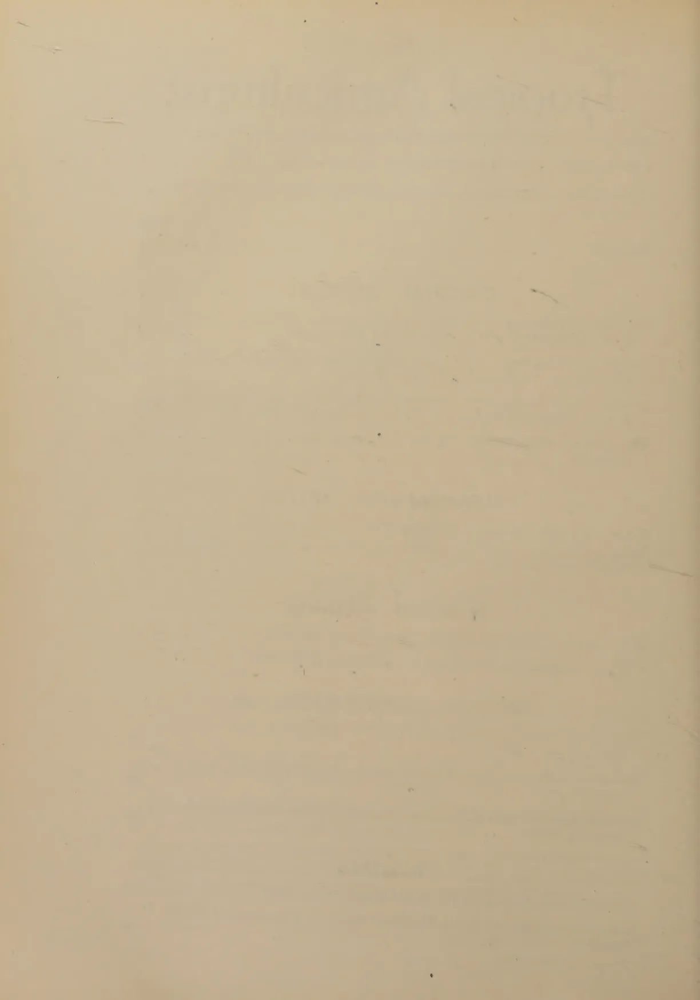
This image shows a blank, aged, cream-colored page. There are faint, illegible markings and a horizontal line near the top, which appear to be bleed-through from the reverse side of the paper. The page has a slightly textured appearance and some minor blemishes.The
Tropical Agriculturist
APRIL TO JUNE, 1942
EDITORIAL
THE BEEF TRADE AND AGRICULTURAL CATTLE
“IN two years’ time there will be no beef in the country if the present rate of slaughter continues”. A man who travels throughout the country and interests himself in the economy of rural life gave expression in this manner to a lurking fear which is almost universal: a rapid depletion of the cattle population of the country is in progress, and the low standard of arable farming will go still lower. We propose to examine how far this fear is justified.
According to statistical returns for which mathematical precision cannot be claimed but which may be regarded as sufficiently true to form the basis of this argument, there were approximately 1,150,000 head of neat cattle in the country at the beginning of this year. Not even a check census has been taken to determine the sex and age groups in this total or to ascertain the periodicity of calving. The assumptions in the following sum in arithmetic are based on personal impressions:
| Females form 70 per cent. of the cattle population .. | 805,000 |
| 50 per cent. of them are of the calving age (age groups of 4 to 9 years) .. .. | 402,500 |
| If they calve once in 18 months, the annual rate of calf production .. .. | 268,333 |
| Infant mortality of 20 per cent. in the first year reduces the number to .. .. | 214,666 |
| And a mortality rate of 10 per cent. in the second year to .. .. | 193,199 |
which may be regarded as the net annual rate of natural reproduction.
The number of cattle slaughtered in 1941 was 140,030. The figures for the first six months of this year indicate the probability that this total will rise to 170,000 in 1942. This is below the reproduction rate, and there is no danger of a fall in numbers unless there is a large proportion of natural deaths.
A factual examination of the problem not only confirms this conclusion, but makes it appear a little pessimistic. The columns
2A and B below give the total number of cattle slaughtered in each of the last eight years and the total number of cattle in the Island at the end of each year respectively.
| A. | B. | ||||
|---|---|---|---|---|---|
| 1934 | .. | .. | 78,839 | .. | 1,090,595 |
| 1935 | .. | .. | 80,835 | .. | 1,074,392 |
| 1936 | .. | .. | 81,437 | .. | 1,128,116 |
| 1937 | .. | .. | 100,025 | .. | 1,086,973 |
| 1938 | .. | .. | 112,949 | .. | 1,088,372 |
| 1939 | .. | .. | 122,370 | .. | 1,082,539 |
| 1940 | .. | .. | 134,065 | .. | 1,125,104 |
| 1941 | .. | .. | 140,030 | .. | 1,168,371 |
It will be seen that in spite of a marked upward trend in the rate of slaughter during this period the total number of cattle in the Island has increased more than 10 per cent. with only slight fluctuations in the intervening years. In other words there is room for a further rise in the consumption of beef before a state of equilibrium is reached and decline begins.
There is therefore no immediate cause for alarm; but the rate of consumption of beef doubled itself in eight years; the increase was uniform, and contrary to popular belief, the fighting forces temporarily resident in the country have not contributed to that increase. The permanent population is cultivating a new habit, and the demand may, in course of time, outstrip the supply unless steps are taken to regulate that supply. Two measures which are interdependent in certain respects suggest themselves. The first is the method of selective slaughter followed by the South Indian cattle owner and described by Capt. Littlewood in his book, Livestock of Southern India :
“The beef trade depends very largely on animals which are, or have been useless for draught or breeding; and if the question is regarded without bias, it is clear that this is an excellent thing for the cattle of the country. By the removal of all useless and worn out cattle, a serious menace to outbreaks of cattle diseases is removed; for, if such animals are not destroyed they are usually allowed to slowly starve to death and in their weak condition, are very much more prone to contract contagious diseases. Not only this, but the removal of such animals leaves more room and more grazing for useful animals. In the Tinnevelly district, since the export trade in beef cattle from Tuticorin has developed, a great improvement is now noticeable among the village cattle. Useless, worn out and half starved cattle are now seldom seen, as ryots dispose of animals, which are no longer useful, to the export trader. The Colombo beef trade removes large numbers of useless cattle”.
This practice will ensure the preservation of an adequate supply of working bullocks and at the same time maintain the
3reproduction rate at a high level. The second method is the improvement of the quality of the cattle so that each unit slaughtered may yield a greater weight of beef. As Captain Littlewood points out, selective slaughter will contribute to this result, but a much more potent factor is price.
The price paid for cattle in the past has been so low that it did not pay the owner to give his stock the care and feeding which would raise the animal's weight by 200 lb.; he did what could be done only in countries with good natural pasture throughout the year—he let his cattle find their own food. He sold the starved bundle of two or three hundred pounds of skin and bone for what he could get for it, and regarded that sum as nett profit. The interests of both the farmer and of the beef trade of the future require that the price of beef cattle be raised even if it involves a higher price of beef.
4R. A. DE ROSAYRO, B.A., B.Sc. (Oxon), B.Sc. (Lond.).
ASSISTANT CONSERVATOR OF FORESTS
THE material for this paper was collected in the course of examination of the Wet Evergreen Forests for the preparation of a Working Plan. The ecological conceptions of forest types are based on analyses of statistical data obtained from actual enumerations of trees in the field and on the writer's own observations. The study of soils has been intensive in the Wet Evergreen Forests of the Province of Sabaragamuwa where over 50 soil pits in representative localities were examined, and more general for the remainder of the Wet Evergreen Forests where a total of 26 soil pits were examined. The latter information has been embodied in a separate paper entitled "Soils of the Wet Zone Forests of the Matara, Galle and Kalutara Districts" (1). The part of this paper dealing with soils amplifies the information contained in the latter. For the sake of completeness, however, a certain amount of repetition is unavoidable.
The Wet Evergreen Forests lie in the south-west of the Island and extend somewhat centrally on to the lower slopes of the range of hills which form the central mountain mass (central massif) of the country. The tract is well drained, the chief rivers being the Kelani ganga forming the approximate northern limit of the Wet Evergreen Forests, the Kalu ganga, Bentota ganga, Nilwala ganga, and finally the Walawe ganga forming the approximate south-eastern limit. The rivers follow the strike of the land and in their upper reaches form deep valleys and rocky ravines with occasional rapids and falls. Topographically, the following regional distribution (2) of the forests may be recognized: The accompanying map shows the location of the principal Wet Evergreen Forests within these regions. (Plate 1).
Region I.—The coastal plain which has an approximate altitudinal range of 100 feet to 300 feet. This plain marks the outermost limit of erosion. It is somewhat narrow at the
5southern end, and widens out at the western portion of the Island. It is for the most part formed from rocks of archæan age and contains some recent alluvial and pleistocene (plateau gravel) deposits.
The topography of the forests within this region is flat or at the most consists of low undulating country. The distribution of the Wet Evergreen Forests within this region is limited, only a few in the extreme south of the Island in the Matara and Galle districts alone falling within it.
Region II.—A region intermediate between the coastal plain and the second peneplain of the central massif having an approximate altitudinal range of 300 to 1,600 feet. The geological formation is archæan, recent alluvial or pleistocene deposits being absent. Two fairly distinct sub-regions may be recognized :—
Sub-region i. consists of the lower slopes extending to approximately 750 feet altitude. These slopes which are more closely associated with the coastal plain are gradual and extend in general northerly to southerly direction with rounded spurs and semi-high plateaux. They bear, mainly, easterly and westerly aspects. This sub-region contains several large forests in the Matara, Galle and Kalutara districts.
Sub-region ii. consists of the upper escarpment slopes leading on to the second peneplain. They are considerably steeper and extend in a general easterly to westerly direction, forming a series of ridges which ultimately merge into semi-high plateaux. The main aspects are northerly and southerly. The bulk of the Wet Evergreen Forests in the Ratnapura and Kegalla districts and a few within the Kalutara district fall within this sub-region.
Region III.—The region of the second peneplain (1,600–1,900 feet) and the slopes rising from this to the escarpment roughly above 3,500 feet altitude of the third peneplain. The geological formation is archæan. This region contains the steepest slopes and is marked by a rugged topography characterized by frequent outcrops of slab-rock, eroded detritus in the form of large and partly detached boulders, and rocky valleys and ravines.
The slopes are mostly continuous, forming part of the steep escarpment slopes of the south-western flange of the central massif, the main portion of which constitutes the Adam's Peak Range and a subsidiary series of parallel ridges lying south in the Rakwana hill country. These lie roughly in a direction south-east to north-west, the slopes bearing mainly southerly to south-westerly aspects. Large tracts of forests especially in the Ratnapura district fall within this region.
6CLIMATEThe climatic conditions prevailing in the Wet Evergreen Forests are strikingly different from the rest of the Island ; the rainfall is heavy and continuous and the relative humidity is high.
RainfallThe distribution of rainfall in Ceylon is typically monsoonal ; in the Wet Evergreen Forests the south-west monsoon is the more important ; local air movements (thunder-storms) and cyclones are the controlling factors in the inter-monsoonal periods (3) between the south-west and north-east monsoons. The relief of the south-west country has also an important controlling influence and some correlation between rainfall distribution and topographical regions can also be recognised. Three broad zones of rainfall based on the average and monthly distribution of rainfall may be recognised (4). (vide Plate 2).
Zone I.—70"–100". The forests falling within this zone are more or less concentrated towards the extreme southern and south-eastern limits of the tract. The curves of monthly rainfall at three typical stations within this zone are shown on Plate 3, fig. 1 (4). The rainfall is somewhat heavier during the controlling phases of the south-west and north-east monsoons, i.e., from May to July and from November to January, but generally the effect of the prevailing south-west monsoon is weak. This is explained by the barrier of the hill ranges which absorb most of the moisture from the winds before they pass over. This zone is more or less a limiting one between the "wet" and "dry" zones proper and the vegetation shows in some instances a corresponding invasion of the dry semi-deciduous forest species.
Zone II.—100"–150". This zone represents the average distribution of rainfall in the tract. Proximity to the line of the main monsoonal current and altitude are both determining factors and hence the distribution of the forests within this zone is mainly within Region I. of the coastal plain and Region II., the intermediate region between the coastal and second peneplains. This zone is a belt surrounding, more or less, the western slopes of the region of the second and third peneplains. Fig. 2, Plate 3, shows the curves of the monthly rainfall of five typical stations (4). The effect of the south-west monsoon is more pronounced in the coastal plain which receives the full benefit of the south-west monsoon in its early stages, the rainfall being highest in May and June (Fig. 2, —curves 1, 2, 5). The forests falling in Region II. all lie on the leeward side of the central massif and receive their rains after the windward
7side has caused precipitation of the moisture laden winds. The effect of the south-west monsoon is weak here and local air movements are of more importance (Fig. 2,—curves 3, 4).
Zone III.—above 150". This zone represents the maximum distribution of rainfall in the tract. The forests within it, all lie on the windward side of Region II., the region intermediate between the coastal and second peneplains, and Region III., the second peneplain and the slopes arising from this up to the escarpment of the third peneplain. Fig. 3, Plate 3, shows the curves of the monthly rainfall of four typical stations (4). The south-west monsoon asserts itself later than in the coastal forests of Zone II., but reaches its maximum effect here in June, when the mountain barrier effectively checks its progress and causes the highest precipitation. The forests of the Adam's Peak Range receive the heaviest rainfall; the maximum recorded for the Island is for Carney Estate which has an average annual rainfall of 232" of which over 120" are received during the period of the south-west monsoon. Part of the Gilimale forest lies in this locality.
There is very little seasonal variation of temperature. Instead, the temperature variation is very considerably controlled by the relief of the land. On the coastal plain of the south-west, the average temperature is 80°–81°F. Temperature records are only available for three stations, Colombo, Galle and Ratnapura within the tract and are tabulated on page 6.
Though the monthly variation of temperature is insignificant, the daily ranges of temperature are considerable. Cloudlessness is the major cause of the great range in daily temperature. Thus during the period of the south-west monsoonal rains, i.e., from May to July, the daily temperature range is least. This point is brought out better by reference to the relative humidity records tabulated on page 6.
In May, June and July, the relative humidity is in each case the highest for the year, but in February and March, the months of lowest rainfall, when the temperature range is greatest, the humidity is lowest. A fairly high humidity as recorded for Galle is associated with a low daily temperature range.
In general, the relative humidity within the tract may be considered high, and fairly constant conditions of temperature and humidity as prevailing in the Wet Evergreen Forests.
8Monthly Mean (M. M.) Daily Temperature Range (D. T. R.) (4)| Station | Jan. | Feb. | Mar. | April | May | June | July | Aug. | Sept. | Oct. | Nov. | Dec. | Year |
|---|---|---|---|---|---|---|---|---|---|---|---|---|---|
| Colombo M. M. | 79.2 | 79.4 | 81.8 | 81.7 | 82.0 | 81.2 | 80.8 | 80.6 | 80.8 | 79.8 | 79.2 | 80.4 | 80.4 |
| D. T. R. | 14.1 | 14.4 | 13.7 | 11.8 | 9.2 | 8.0 | 7.5 | 8.1 | 8.5 | 9.8 | 11.4 | 13.1 | 10.8 |
| Galle M. M. | 78.6 | 79.4 | 80.7 | 81.5 | 81.1 | 79.7 | 79.4 | 79.8 | 79.2 | 78.8 | 78.4 | 79.7 | 79.7 |
| D. T. R. | 11.2 | 11.7 | 11.4 | 9.6 | 7.0 | 6.4 | 6.0 | 6.1 | 6.1 | 7.5 | 9.3 | 8.6 | 8.6 |
| Ratnapura M. M. | 80.1 | 81.5 | 82.1 | 82.4 | 81.5 | 80.5 | 80.4 | 80.5 | 80.2 | 80.0 | 80.0 | 79.6 | 80.7 |
| D. T. R. | 17.8 | 20.2 | 19.1 | 17.3 | 14.0 | 12.0 | 12.1 | 13.0 | 13.7 | 14.7 | 15.3 | 15.3 | 15.4 |
| Station | Jan. | Feb. | Mar. | Apr. | May | Jun. | July | Aug. | Sept. | Oct. | Nov. | Dec. | Year |
|---|---|---|---|---|---|---|---|---|---|---|---|---|---|
| Colombo | 70 | 68 | 68 | 71 | 76 | 78 | 78 | 76 | 75 | 76 | 76 | 72 | 74 |
| Galle | 78 | 75 | 74 | 77 | 81 | 84 | 84 | 84 | 82 | 82 | 80 | 80 | 80 |
| Ratnapura | 72 | 64 | 69 | 74 | 76 | 78 | 76 | 74 | 74 | 76 | 76 | 75 | 74 |
Origin and Structure.—The present topography of the Island is the result of a series of tectonic movements which consisted of positive movements or uplifts in which the limits of the three peneplains were eroded in rock of archaean age. Two minor negative movements (of subsidence) followed forming the present submarine plateau (2). Some recent alluvial deposits and probably some pleistocene plateau gravel deposits occur within the region of the first peneplain or coastal plain (5).
The archaean rock formation within the tract is composed mainly of the Charnockite Series of gneisses, which merge at the approximate limit of the second peneplain into the Khondalite-Charnockite Series consisting of Charnockites developed as sills and intercalated in the older rock of the Khondalite Series. The mountain chains are the strike ridges of these archaean rock formations.
Rock (6). The Charnockite Series vary from highly acid hypersthene granites to norites and basic hornblende hypersthenites. The colour of the rock varies from dark grey in the more acid series to dark greyish black in the basic series. The rock displays well marked foliation or banded structure. The series associated with forest soils appears for the most part to be the acid series.
The Khondalite Series consist of schistose and gneissose rocks. The principal member of the series in Ceylon is quartzose or granular quartz rock which forms extensive bands along the strike.
SOILSGeneral.—The morphological and profile characteristics of the Wet Evergreen Forest soils with special reference to the soils of the extreme south-west of the Island (Matara, Galle and Kalutara Districts) have been described in detail in a previous paper (1). Their salient characters are briefly recapitulated here and amplified where necessary as a result of further studies of the Wet Evergreen Forest soils of the Province of Sabaragamuwa chiefly of the Ratnapura District.
For the most part, the soils are residual in derivation, exhibiting a gradual change from the parent C horizon to the surface A horizon. In eroded soils accumulation of gravel in a B horizon is observed; where erosion is more pronounced, the soil has a general shallow truncated appearance and contains eroded detritus.
Soil Analyses.—Joachim in Paper VI of his Studies on Ceylon Soils (7) has described the physical and chemical properties of soils examined by him in the extreme south-western Wet Evergreen Forests chiefly in the Matara District. These
10soils may be regarded as somewhat exceptional, in that with one exception, these are typical of one specific forest community in which hora, Dipterocarpus zeylanicus, Thw. is chiefly predominant. These soils, as expected, show no characteristic B horizon, the gravel content of the A horizon being small. The parent horizon, however, often shows a fairly high gravel and stone content. The soils vary in texture from sandy to clayey loams. Chemically the soils are markedly acid in reaction with fairly high organic matter and nitrogen contents in the A Horizon. These constituents decrease with increasing soil depth and are very low in the C horizons. The carbon-nitrogen ratios generally show a decrease from about 15 in the A horizons to about 10.5 in the C horizons. The total exchangeable bases are low in all horizons. The proportion of replaceable calcium is variable; replaceable potassium, lime and phosphoric acid contents are all very low. The soils are fundamentally lateritic or laterite in type.
Analyses of the soils of more representative soil profiles supplied by the writer were made later by Joachim and the results embodied in a more recent paper (8). The descriptions of these soil profiles are incorporated in the profile diagrams Nos. 4, 5, 6 and 17 on Plates 5 and 7. The gravel and stone content in the A horizons is generally higher in these soils than in the soils previously examined by Joachim. He observes however that "in no instance has a typical B horizon been observed in the soil profiles, unless, of course, the ferruginous gravelly horizons, (A 2 or C 1) be considered so." In one instance, however, viz., the Gilimale (Ratgama) soil profile (Plate 7, diagram 17) the A 2 horizon approaches more closely in its extremely high gravel content (66.3 per cent.) which is in excess of that found in the C horizon (60.9 per cent.), a B horizon proper, and has been so considered by the writer in the Classification of Soils described later. The A 1 horizons of these soils vary in texture from Light to medium loams. The C horizons are gravelly, but the soil matrix is generally more clayey in nature. The chemical analyses agree fairly closely with the previous results as regards (a) reaction, which is even more markedly acid with a pH. range of 4.7 to 5.2, (b) deficiency of bases, (c) organic matter contents which are generally slightly lower, (d) similar variations in the nitrogen content and with one exception (the Madawala soil profile—Diagram 5) in the carbon-nitrogen ratios.
Over 50 soil profiles were examined of soils of the Wet Evergreen Forests in the Ratnapura and part of Kegalla Districts. The study of the physical characters of these profiles confirms the tentative classification into seven Soil Series (previously
11termed 'Groups') described in a previous paper (1). The relationship between these Soil Series, forest communities and the dominant height growth of the tree layer is clearly demonstrated. The degree and rate of growth are conditioned more by the physical properties of the soil, chiefly the distribution, size and frequency of the gravel and stone content in the profile horizons, chiefly the B and C horizons, than by the actual analytical composition of the soils, which does not vary appreciably (9, page 154).
The description of typical soil profiles is incorporated in the 23 representative soil profile diagrams appearing on Plates 4-8, which are adapted from actual sketches made in the field. In the following description of the seven Soil Series recognized, their important characteristics are described briefly, and any significant differences being dealt with in more detail. For the full description of these Soil Series, the writer's previous paper (1) may be consulted.
Series I.—Alluvial Soils. These soils are restricted in their distribution on account of the general steeper topography characteristic of the forests (in the Ratnapura and Kegalla Districts) and therefore less frequent distribution of river alluvium. The typical features of the soil profile are deep well-drained sandy conditions with little or no clay fraction. There is little humus penetration or mineral skeleton and horizon differentiation is not well marked. These soils are specifically associated with the predominance of hora, Dipterocarpus zeylanicus, Thw., which shows a dominant height growth of 100 to 150 feet.
Series II.—Residual non-gravelly loams. This series is also not well represented, only a few isolated examples being found, chiefly in the extensive forests of the Kelani Valley Reserve in the Kegalla District, and Bambarabotuwa Reserve in the Ratnapura District. The soil profile is characterized by an A 1 horizon of a light loamy soil with some humus penetration followed by a deep loam or clayey loam, the A 2 horizon. This gradually merges into the C horizon which is composed of friable rock brash or decomposing vesicular rock. Hard ferruginous concretions are absent in the A horizon. The mechanical analyses carried out by Joachim (10) on two examples of this Series (Plate 5,—Diagrams 4 and 5) reveal a relatively negligible gravel and stone content, viz. 3.2 per cent. in one case (Owala Mahabage in Bambarabotuwa Reserve). In the other (Madawala in the Kelani Valley Reserve) the A 2 horizon has a gravel and stone content of 26.6 per cent. and may be considered an incipient B horizon, the C horizons, C 1 and C 2, having a gravel and stone content of 23.6 and 15.6 per cent. respectively.
12These soils are not as in the case of the soils of the extreme south-west Wet Evergreen Forests restricted to the community on which hora predominates but also to the na-dun (Mesua-Doona) and kataboda—Durio zeylanicus, Gardn. communities. The dominant height growth varies from 100 to 125 feet.
Series III.—Residual Gravelly Loams. This series of soils is the most widely distributed being associated with sub-region ii. of Region II. and Region III., that is from the escarpment slopes of the second peneplain up to the escarpment slopes of the third peneplain. The bulk of the forests of the Ratnapura and Kegalla Districts fall within these limits. The soils contain a fairly well distributed mineral skeleton of ferruginous or sometimes quartz gravel derived in situ from the parent rock. The latter appears to be connected with outcrops of the Khondalite Series. The soil profile thus shows a gradual change from the A to C horizons. Within the wide range of soils in this Series, three main sub-series may be recognized.
Sub-series i.—Residual Gravelly Sandy Loams. These are the deepest and best drained soils and but for their gravel content are similar to the sandy alluvial soils of Series I. The A 1 horizon also appears to have a more than usually high humic content. The size of the ferruginous or quartz concretions is variable. This sub-series is associated with the predominance of hora—Dipterocarpus zeylanicus, Thw., with correspondingly good height growth, dominant heights of 120–150 feet being recorded.
Sub-series ii.—Loams or Clayey Loams with Large Gravel. These soils have a wider distributional range than sub-series i. They are however more closely associated with steeper topography and higher altitudes and occur especially in the isolated series of ridges of the Rakwana Hill Country. The A 1. horizon is usually shallow, the A 2 and A 3 horizon (if present) are fairly deep and contain well distributed large ferruginous or quartz concretions interspersed with fragments of decomposing rock and included boulders. Small ferruginous concretions are almost absent. Most of the commoner and more mixed forest communities are well represented on these soils. Milla—Vitex pinnata, L., diyapara—Wormia triquetra, Rottb., hedawaka—Chaetocarpus castanocarpus, Thw., velipenna—Anisophyllea cinnamomoides, Gardn. & Champ., malaboda—Myristica dactyloides, Gaertn., and badulla—Semecarpus gardneri, Thw. are the characteristic species of these communities. The aridda—Camnosperma zeylanicum, Thw. consociation also appears associated with this sub-series. The dominant height growth is restricted, varying from 80 to 100 feet.
13Sub-series iii.—Loams or Clayey Loams with prolific Shot-like Gravel. This is the most widely distributed of the three sub-series; it appears that the parent Charnockite rock in the Ratnapura District especially, has a tendency to produce this type of soils at somewhat lower altitudes than in the previous sub-series. The A 1 horizon is very shallow. The A 2 and A 3 horizon (if present) are fairly deep and contain an abundance of small ferruginous and occasionally, quartz concretions. Large gravel is usually absent. The forest communities occurring in this sub-series are with perhaps the exception of the Camnosperma consociation, also common to this sub-series. As would be expected, the growth here is slightly poorer than in sub-series ii., the dominant height growth varying from 70 to 90 feet.
Series IV.—Soils with a Zonal Gravel Layer. These soils are somewhat frequent in occurrence and are more strikingly associated with forests where the vegetation is high forest in a late stage of secondary succession. These soils differ from those of Series III. in that the gravel content is not uniformly distributed, but is partly concentrated into a zonal layer of varying thickness, but usually not exceeding one foot thick. This gravel layer may not be derived entirely by deposition of hydrated oxides of iron and alumina from the C horizon, and in the strict derivative sense, is not always a typical B horizon. However, there is always a striking difference in the gravel content between this and the A horizon and to a less extent the C horizon, sufficient in the writer's opinion to regard it as a B horizon. This has been brought out in one instance, the Gilimale (Ratgama) profile, by actual mechanical analyses described previously (Plate 7, diagram 17). In the more typical examples, e.g., in Mudunkotuwa Reserve (Plate 7, diagram 18) the B horizon becomes more compacted and in the nature of a hard "pan". The B horizon is morphologically very distinct.
The forest communities occurring on these soils are those common to Series III. especially sub-series iii. As in the latter, the dominant height growth is poor, generally varying from 70 to 80 feet.
Series V.—Swamp (Clayey) Soils. These soils are rare in occurrence, only one example (Plate 8, diagram 19) being examined. The salient characteristics of the soil profile is a high accumulation of humus in the surface horizons (A 1 and A 2) and a heavy clayey texture in the deeper horizons (C 1 and C 2). These conditions are due to bad drainage consequent on water-logging. The vegetation in this particular instance was scrub jungle chiefly containing the bata bamboo, Ochlanda stridula, Thw. and only a few tree species.
14Series VI.—Shallow Truncated and Bouldery Soils. These soils are common in occurrence, the intensity and frequency of chena (shifting) cultivation and predisposing topography have in several cases especially the more accessible forests, contributed to severe, persistent erosion resulting in a shallow or truncated profile, with frequency of boulders and rock fragments. The soil profile shows a shallow A horizon seldom exceeding one foot in depth. This is usually a light loam with ferruginous concretions and included boulders. This is immediately followed by the C horizon which usually consists of decomposing "laterite" rock.
The vegetation consists of low jungle communities containing chiefly pepaliya—Aporosa latifolia, Thw., hedawaka—Chaetocarpus castanocarpus, Thw., milla—Vitex pinnata, L. and welipenna—Anisophyllea cinnamomoides, Gardn. & Champ. and earlier sub-series containing chiefly the shrub species weraniya—Hedyotis fructicosa, L., bowitiya—Melastoma malabathricum, L. and Osbeckia aspera, Bl. and bata—Ochlanda stridula, Thw.. The dominant tree height does not exceed 60 feet.
Series VII.—Fernland (Kekilla) Soils. These have been described in detail by Joachim (9). These soils are associated specifically with the kekilla—Gleichenia linearis consociation, (sometimes associated with the illuk grass—Imperata arundinacea, Cyrill). The soils contain a well defined raw or acid humus layer, followed sometimes by a shallow gravelly A 2 horizon. The C horizon usually consists of a compact clay derived in situ from decomposing rock. No examples of this series were examined in the Ratnapura or Kegalla District.
15A. W. R. JOACHIM, Ph.D., Dip. Agr. (Cantab.),
CHEMIST
AND
S. KANDIAH, Dip. Agr. (Poona),
ASSISTANT IN AGRICULTURAL CHEMISTRY
1. Attention is directed to the existence of a distinct plant community—grassland (patana), fernland (kekilla), or parkland (damana) side by side with or in close vicinity to jungle or forest in the different climatic zones of Ceylon, and the theories for this phenomenon are reviewed and discussed.
2. A comparative study of the morphological and analytical characteristics of fourteen soil profiles sited in these contrasting vegetation formations has revealed that—
(a) The upper horizons of both wet and dry patana soils are markedly lower in exchangeable base contents, and, therefore, more acidic in reaction than those of the adjacent forest soils. Their carbon and nitrogen contents are also lower than those of the latter, and the organic matter itself is less humified in the patana than in the forest soils. The patana top soil has a higher moisture holding capacity, pore space, sticky point moisture, moisture equivalent and percolation rate than the corresponding forest soil. The C horizons (sub-soils) of both vegetation soil types are very similar in physical and chemical composition, but the drainage of the patana sub-soils tends to be somewhat impeded.
(b) There are no appreciable differences between the soils and sub-soils of the fernlands (kekillas) and those of the contiguous forest. Such differences as exist have arisen as a result of conditions favouring an accumulation of acid humic material under fernland conditions. Soils in the low country wet zone under either type of vegetation are very deficient in exchangeable bases, strongly acid in reaction, and highly laterized.
16(c) There is evidence for the view that the patanas and the fernlands (kekillas) are an ecological succession to forest, the transformation having been effected by the periodical burning of the secondary vegetation.
(d) The soils of the parklands (damanas), though of much shallower depth, are of the same fundamental nature as the jungle soils in the vicinity. They have, however, slightly lower carbon and nitrogen contents and much higher exchangeable magnesium/calcium ratios than the latter soils. Their water percolation rate is lower (in one instance very markedly so) than those of the jungle soils. Their natural drainage is, therefore, imperfect. These soils set very hard on drying. The shallow depth and peculiar nature of their soils would account to a large degree for the incidence of the damanas in the low-country, dry-zone areas of Ceylon. The occasional burning of the grasses in the damanas contributes in some measure to the permanence of this vegetation formation.
IN earlier papers of this series on Ceylon soils, the profile features and the analytical composition of the soils of certain characteristic vegetation formations in Ceylon were discussed (1—4). Notable among these vegetation types are the patanas, grasslands or savannahs of the wet and dry up-country, the kekillas or fernlands and the bata jungle of the wet low-country, particularly of the Ratnapura district, and the damanas or parklands, also termed the talawas, of parts of the semi-dry low-country. These vegetation formations occur in the same climatic zone, not infrequently in close juxtaposition with forest or jungle. The boundaries between the latter and the wet patanas or fernlands are often sharp and abrupt, and in no way related to the physical features of the land. Plates I, II, and III illustrate these points clearly. Plates IV, V, and VI give some idea of the different types of vegetation found in the low-country dry zone of the Island, viz., high jungle, medium and scrub jungle, and damana or parkland. In order to ascertain whether the occurrence of these distinct plant communities in close proximity to each other is in any way determined by soil characteristics, or conversely whether the vegetation has influenced the nature of the soil to any extent, comparative analyses of soils from jungle or forest land and from patana, kekilla or damana land adjacent to or in the near vicinity of the former, were undertaken, and the results of these analyses are presented in this
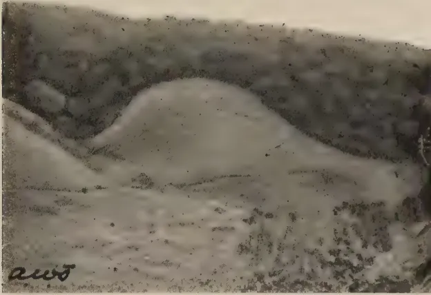
PLATE I.
SHOWING TYPICAL PATANA (GRASS) LAND IN THE FOREGROUND WITH
LOW FOREST IN THE BACKGROUND AT HAKGALA.
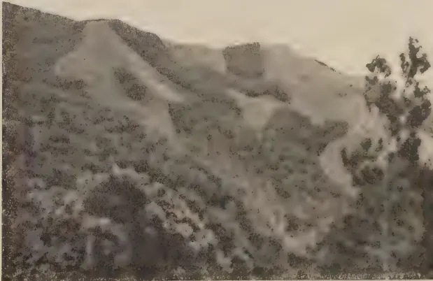
PLATE II.
SHOWING PATANA LAND INTERSPERSED WITH FOREST AT HAKGALA.
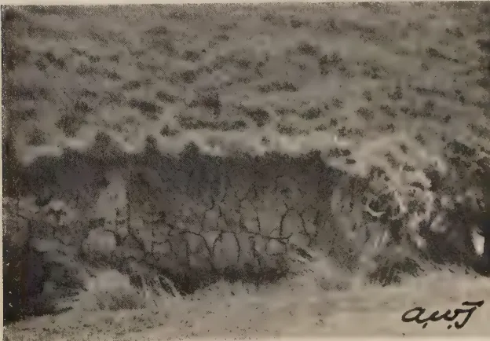
PLATE II.a.
SHOWING A SOIL PROFILE OF TYPICAL PATANA LAND NEAR HAKGALA.
NOTE THE CHARACTERISTIC SOIL STRUCTURE.
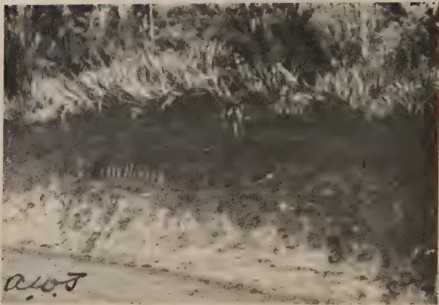
PLATE II.b.
SHOWING A PROFILE OF A TYPICAL WET PATANA SOIL AT NUWARA ELIYA.
NOTE THE DARK HUMIC TOP SOIL.
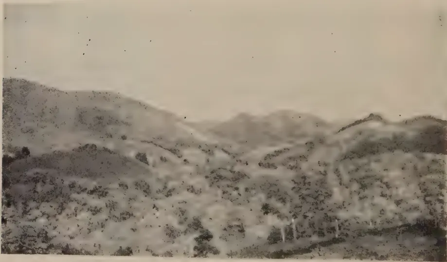
PLATE III.
SHOWING TYPICAL KEKILLA (FERN) LAND INTERSPERSED WITH JUNGLE AND
RUBBER ON THE WEST BANK OF THE GIN-GANGA.
paper. It would be advantageous at this stage, however, to recount briefly the various theories that have been put forward for the occurrence of a widely different plant community in an area the native vegetation of which would appear to be jungle or forest.
Most observers hold that the patanas and fernlands are a secondary formation derived from primary jungle or forest, the transformation having been effected by the interference with the natural regeneration of the vegetation by man or beast e. g. by burning, grazing or shifting cultivation, aided by natural agencies such as intense precipitation causing severe soil erosion, or a prolonged dry season when soil moisture is reduced to limits below the minimum required for the growth of shrubs and trees. Grasslands of the patana type occur in many parts of the world, viz., S. America, India, Central, South and East Africa (5), the Dutch East Indies, Siam (6), &c., and in most cases their origin is traced to the successive firing of the primary jungle or forest. In a paper on "The Botany of the Ceylon Patanas", Pearson (7) very ably discusses the factors which have led to the development of both the wet and dry patanas. In his opinion, on the Uva slopes below 4,500 ft. "the peculiarities of the climate have co-operated with the periodically recurrent grass fires to transform an open forest of low xerophytic trees with an undergrowth of grass, i.e., a savannah-forest, into barren grassy plains. These plains, being completely denuded of soil, must be regarded as a permanent savannah, the natural reafforestation of the greater part of which is impossible under the present climatic conditions". The characteristic tree species of the dry patanas are the patana oak (Cariya arborea) and Phyllanthus emblica (nelli, S).
The practice of burning the coarse wiry patana grasses before the North-East monsoon in order to provide a fresh young growth during the rains for cattle to feed on, has probably existed from time immemorial. Anthropologists and others (8, 9) assert that the Uva patanas were inhabited by early (Neolithic) man, as evidenced by the artefacts or stone implements found on them. The type of forest which must have existed on these patanas before they were transformed to their present condition, is, as referred to above, of the savannah type, the climatic conditions precluding a more vigorous or denser forest development. The regular firing of the grasses before the onset of the heavy North-East monsoon rains, with consequent severe soil erosion resulting in, at best, a shallow depth of soil over the greater part of the patanas, poor water retention by the soil owing to the undulating nature of the country and the hardness of the soil surface, and a long dry season of eight
18months duration, during six of which a drying wind blows constantly over the area causing intense soil moisture evaporation—all these factors have been responsible for the formation of the extensive areas of Uva grassland. It is reported, however, that where the soil conditions are suitable and patana fires are prevented, the forest slowly re-establishes itself on the patana. Reafforestation is thus possible under these conditions.
Soil moisture is the chief limiting factor of forest and jungle growth, both excess and deficiency being detrimental to the development of the latter. In the dry patanas, oases of forest occur in the folds and depressions of the hills where water in sufficiency is available, drainage good, and protection from strong winds secured.
The wet patanas such as occur in the Nuwara Eliya district, Horton Plains, &c., on the western side of the central ridge extending from Horton Plains towards Ramboda, at elevations above 4,500 ft., have also doubtless originated from the low, slow-growing, semi-xerophytic type of forest characteristic of these areas, in a manner similar to the Uva patanas. Some of the wet patanas have, however, been for a period under coffee and perhaps cinchona. On the failure of the latter crops, the areas were abandoned and subsequently periodically burnt for grazing purposes. On these patanas, which as already remarked often occur side by side with forest (see plates I and II), owing to the heavy, well-distributed rainfall, low average temperature and high humidity, humus deposits extending from a few inches to about 5 ft. thickness accumulate on the soil surface. This humic material is of high water absorptive capacity and strongly acid in reaction. It contains an abundance of ferrous oxide. These conditions are unfavourable for the development of trees, the only species that flourishes on these patanas being the Rhododendron. The wet patanas are comparable to the moor and marsh formations characteristic of temperate climates. The same type of grassland occurs in the mountainous areas of Kenya, S. India and other tropical countries. Ranganathan (10) puts forward the view that the occurrence of these grasslands in the Nilgiri hills at an elevation of about 6,500 ft. side by side with temperate evergreen forest (sholas), is governed by the incidence of frost. But most investigators do not hold with him but adhere to the grass-fire theory.
The fernlands or kekillas (Plates III and IIIa are the dominant secondary vegetation in the wet low-country areas of Ceylon, where the annual precipitation exceeds 120 inches. They are not infrequently contiguous with the high rain forest (mukalana) on the same hill slope, and the lines of demarcation are often clear and regular. There is little doubt that
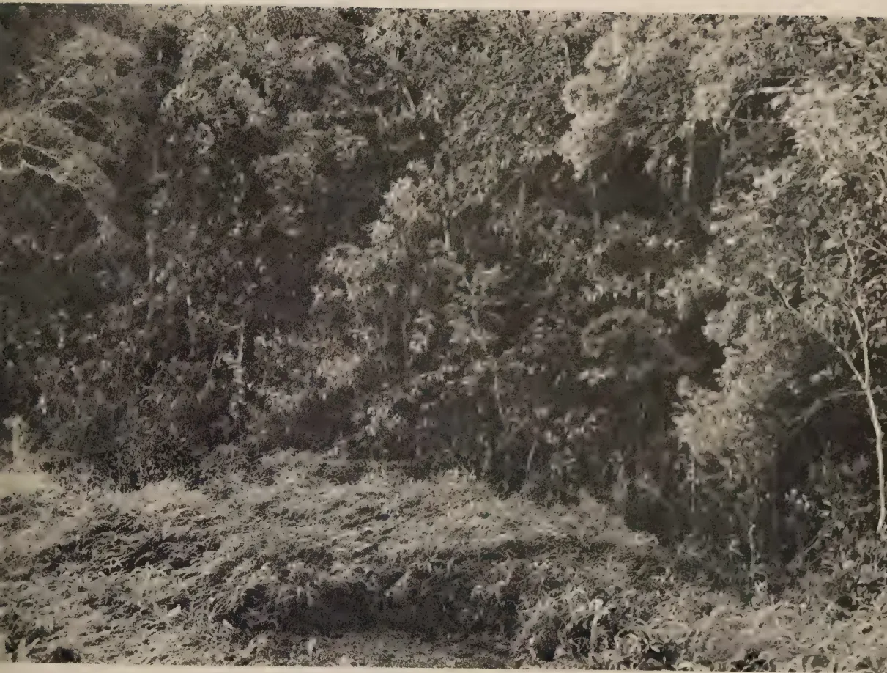
A black and white photograph showing a dense rain forest in the background and a field of Kekilla (fern) land in the foreground. The foreground is a sloping area covered with low-lying vegetation, identified as Kekilla (fern) land. The background is a thick, dark forest with many trees and undergrowth, identified as a rain forest (Mukalana) in the Galle District.PLATE III. a.
SHOWING KEKILLA, (FERN) LAND IN THE FOREGROUND AND RAIN FOREST
(MUKALANA) IN THE BACKGROUND (GALLE DISTRICT).
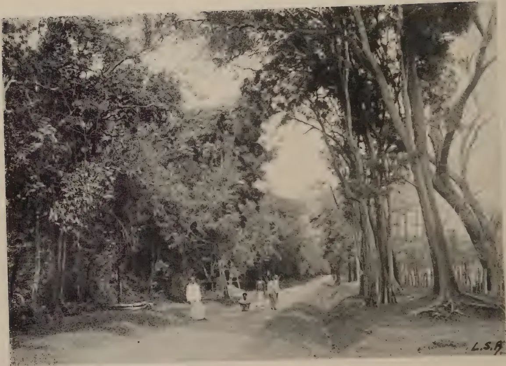
A black and white photograph showing a dense, high jungle path at Dambulla in the dry zone. The path is flanked by thick trees and foliage, with several people walking along it. The image is signed 'L.S.A.' in the bottom right corner.PLATE IV.
SHOWING TYPICAL HIGH JUNGLE AT DAMBULLA IN THE DRY ZONE.
the fernlands have arisen as a result of the cutting down of the forest for cultivation or pastoral purposes and the regular burning of the succeeding vegetation thereafter. If burning is not practised, the characteristic vegetation in succession to the forest is the bata shrub jungle, so called from the presence in it of the characteristic cane bamboo, Ochlandra stridula. The plant species commonly found on the fernlands are Gleichenia linearis (kekilla S), Nephrolepis, a large-leaf fern, and the grass Themada tremula.
In the semi-humid, hot, low-country of Ceylon, and mainly in the country watered by the Mahaweli Ganga and other rivers flowing east, considerable extents of low-lying, fairly level, park-like meadows, known as the damanas (see Plate VI) and sometimes as the talasas, occur amidst the low and medium jungle dominant in the area (see Plate V). Their origin has given rise to much speculation. The damanas are a type of grass land over which are scattered islands of tree and shrub vegetation, the density of which increases with the depth of soil. The vegetation itself is largely of the xerophytic type. The characteristic grass varieties found on them are Crysopogon aciculatus, Dactyloctenium aegyptiacum and Chloris barbata. The soil, except where the pockets of jungle occur, is generally shallow; it is of two main types, a sandy loam of poor water-retaining capacity and a heavier black loam which swells appreciably and becomes very sticky on wetting and sets very hard on drying. Water percolation is, therefore, slow through the latter soils after they have absorbed a certain amount of water. The damanas are utilized as grazing grounds for cattle especially when cattle fodder is scarce elsewhere, and are also reported to be set fire to by the herdsmen before the rainy season commences. This fact, considered in conjunction with the abnormal nature of the soils of the damanas, would account, partly at any rate, for the characteristic features of the vegetation. The view is also held that the damanas are derelict paddy fields, the growth of jungle on which has been restricted by the regular grass fires.
The analytical methods followed in these comparative soil studies were the same as those adopted previously. In addition, the degree of humification by Mc Lean's method (11) and the base exchange capacity by Olsen and Bray's method (12) were ascertained for a few samples. Exchangeable magnesium, and sodium+potassium in the Minneriya soil samples were estimated by Puri's method (13). The following physical characteristics were also determined: apparent and real specific gravity and pore space by standard methods (14), percolation rate and moisture equivalent by Bouyoucos' methods (15, 16)
20and the dispersion ratio by a modification of the U.S.A. Department of Agriculture method (17). The wilting coefficient was calculated from Keen's formula (18).
Fourteen soil profiles were studied in connexion with this investigation. The soil samples examined numbered 27. They may be classified as follows :—
| Vegetation Types | Location | Number |
|---|---|---|
| Wet patana and forest | Bopatalawa | 4 |
| Hakgala | 6 | |
| Dry patana and forest | Diyatalawa | 2 |
| Fernland and forest | Pasdun Korale | 4 |
| Liniyawa | 6 | |
| Damana and forest | Minneriya | 5 |
The samples were obtained from areas where the contrasting vegetation formations were adjacent or in close vicinity to each other. The analytical data are presented in four tables, the first three of which deal with the chemical and textural composition of the samples and the fourth with their physical characteristics. The profile features of the soil types are shown in tabulated form separately for each group of soils discussed. Plates IIa and IIb illustrate the characteristics of the wet patana profile.
For table Grassland (Patana) vs. Forest see page 21
For Table I. see page 22
An examination of the data of Table I will show that the soils and particularly the sub-soils or BC horizons of adjacent forest and wet patana land are of similar textural composition. This is apparent on inspection of such profiles in the field. The A horizons of both soil types are rich in organic matter and nitrogen, but the organic matter in the forest top soil is more humified than that in the patana soil. This is also obvious when the soils are studied in the field. (See plates IIa and IIb). The carbon and nitrogen contents of the A horizons of forest soils are higher than those of the patana soils, but the carbon/nitrogen ratios are higher in the latter soils (vide Bamber (19) and Bruce (20)) confirming that the organic matter is less humified in the wet patana than in the adjacent forest soil. The chief differentiating characteristic between the top soils of the two vegetation soil types is the replaceable base content, which is higher (in some cases very markedly so) in the forest than in the patana soil sample. The exceptionally high figure for exchangeable bases in the Bopatalawa A horizon soil is due to the large proportion of well-decomposed leaf mould in the particular sample. The actual exchangeable base contents of the patana soils are noted
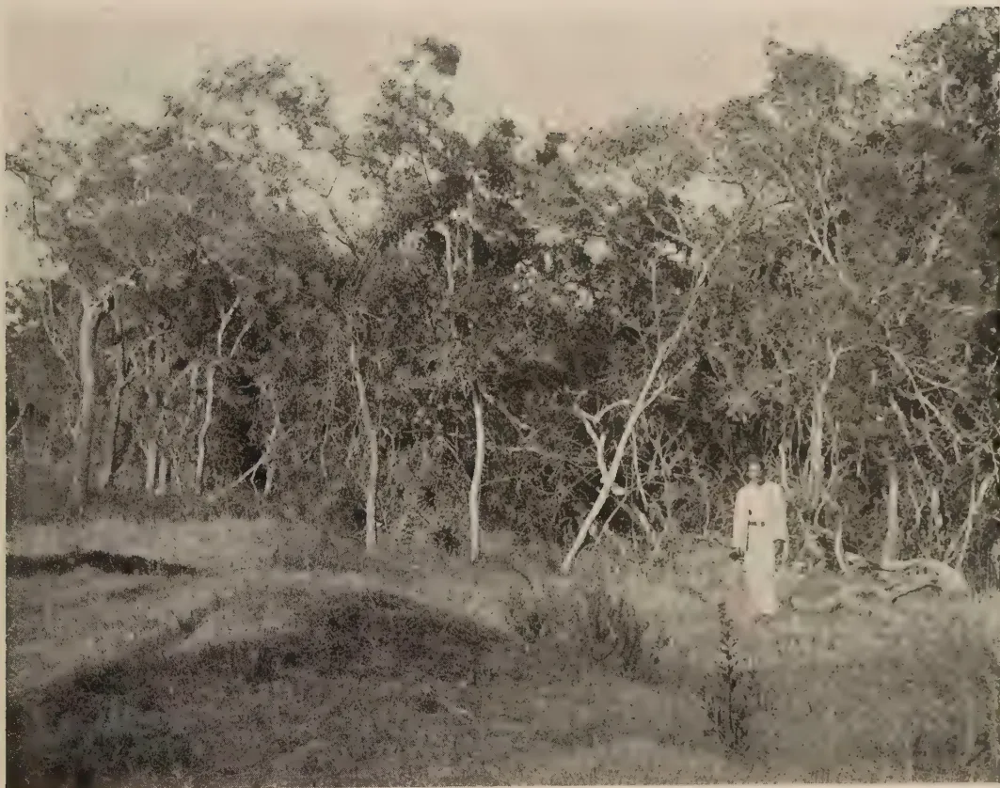
A black and white photograph showing a person standing in a dense, medium jungle and scrub area. The person is positioned on the right side of the frame, wearing a light-colored, long-sleeved garment. The background is filled with numerous trees and bushes, creating a thick canopy. The foreground shows a mix of grass and low-lying vegetation. The overall scene depicts a natural, wooded environment.PLATE V.
SHOWING MEDIUM JUNGLE AND SCRUB AT MINNERIYA.
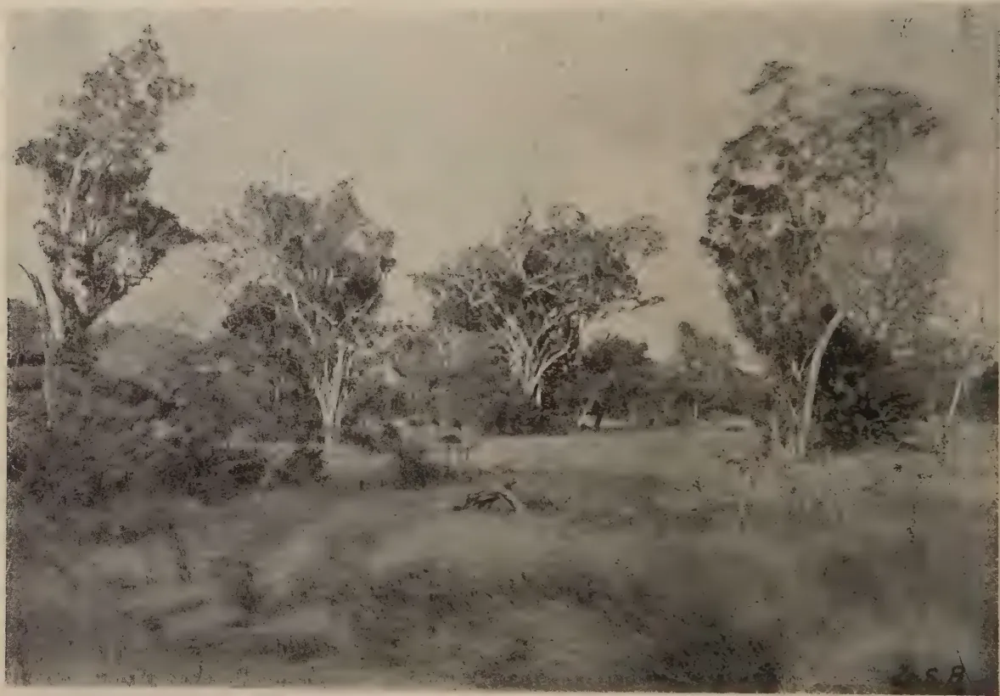
A black and white photograph of a landscape. In the foreground, there is a grassy field with some low-lying vegetation. Several large, leafy trees are scattered across the middle ground. The trees have thick foliage and some appear to have lighter-colored trunks. The sky is a uniform light gray. In the bottom right corner, there is a faint signature that appears to read "J.S.B."PLATE VI.
SHOWING TYPICAL DAMANA LAND AT MINNERIYA.
| Location and Annual Rainfall | Profile Characteristics | Forest | Patana | ||
|---|---|---|---|---|---|
| Depth | Description | Depth | Description | ||
| 1. Bopatalawa, 98 in. Wet patana area |
Horizon A : Depth | 0-10 in. .. Dark brown loam containing leaf mould and mull in quantity ; large earthworms numerous ; friable ; drainage excellent |
Horizon AC : Depth | 10 in. → 4 ft. .. Yellow brown loam with ironstone nodules in some quantity ; drainage good |
0-7 in. Blackish brown peaty loam, friable, irregular columnar structure, drainage good |
| Horizon AC : Depth | 10 in. → 4 ft. .. Yellow brown loam with ironstone nodules in some quantity ; drainage good |
Horizon A1 : Depth | 0-3 in. .. Light brown loam friable, thick mat of roots, drainage good |
7 in. → 4 ft. .. Reddish to yellow compact clay loam with red mottlings of decomposed ironstone concretions ; drainage somewhat impeded. Occasionally a quartz gravel horizon overlies this yellow loam |
|
| 2. Hakgala, 101.4 in. Wet patana area |
AC : Depth | 3-12 in. .. Light brown gravelly loam, friable, good root growth, drainage good |
AC : Depth | 6-13 in. .. Light brown loam, hard but friable, irregular prismatic, fair root growth, drainage good |
0-6 in. Dark brown peaty loam, friable, thick mat of roots |
| C : Depth | > 12 in. .. As for (1) above |
C : Depth | > 13 in. .. As for (1) above |
0-6 in. Dark brown peaty loam, friable, thick mat of roots |
|
| 3. Diyatalawa, 63 in. Dry patana area |
Horizon A : Depth | 0-10 in. .. Dark brown loam, fairly gravelly, friable, drainage good |
Horizon A1 : Depth | 0-8 in. .. Brown clay loam, friable, drainage good |
0-8 in. Brown clay loam, friable, drainage good |
| C : Depth | 10 in. → 3 ft. .. Yellowish brown loam with nodules of decomposing rock, drainage good |
C : Depth | 10 in. → 3 ft. .. Reddish yellow heavy loam with decomposing ironstone nodules in some quantity, drainage good |
10 in. → 3 ft. .. Reddish yellow heavy loam with decomposing ironstone nodules in some quantity, drainage good |
|
22
TABLE I
| Bopatalawa | Hakgala | Diyatalawa | ||||||||
|---|---|---|---|---|---|---|---|---|---|---|
| Forest | Wet Patana | Forest | Wet Patana | Dry Patana | ||||||
| A % | AC % | A % | AC % | 1A % | 1AC % | 2A % | 2AC % | A % | A % | |
| Mechanical Analysis | ||||||||||
| Stones and gravel | Nil | 7.5.. | Nil | 2.7.. | 6.6.. | 11.7.. | 0.5.. | 1.5.. | Nil | 1.6.. |
| Coarse sand .. | 11.6.. | 25.1.. | 18.9.. | 17.1.. | 17.5.. | |||||
| Fine sand .. | 8.5.. | 14.9.. | 9.5.. | 10.3.. | 35.0.. | |||||
| Silt .. | 9.7.. | 9.1.. | 9.5.. | 9.8.. | 12.3.. | |||||
| Clay .. | 36.4.. | 43.4.. | 38.3.. | 47.5.. | 9.7.. | |||||
| Loss by solution | 24.7.. | 2.8.. | 17.6.. | 9.4.. | 29.9.. | |||||
| Moisture .. | 9.1.. | 4.7.. | 6.2.. | 5.9.. | 4.9.. | |||||
| Texture index number | 33.6.. | 39.9.. | 35.4.. | 41.7.. | 5.1.. | |||||
| Soil type .. | Heavy Clay | Loam | Heavy Clay | Loam | 27.9.. | |||||
| Loam | Loam | Loam | Loam | Clay | ||||||
| Loam | ||||||||||
| Chemical Analysis | ||||||||||
| Loss on ignition | 33.24.. | 12.45.. | 22.31.. | 16.23.. | 25.47.. | 24.01.. | 31.27.. | 22.71.. | 25.92.. | 19.60.. |
| Combined water | 20.32.. | 10.62.. | 12.82.. | 11.47.. | 9.05.. | 10.49.. | 9.80.. | 10.69.. | 9.83.. | 10.77.. |
| Organic matter | 12.92.. | 1.83.. | 9.49.. | 4.76.. | 16.42.. | 13.52.. | 21.47.. | 12.02.. | 16.09.. | 8.83.. |
| Carbon .. | 7.51.. | 1.06.. | 5.51.. | 2.96.. | 9.52.. | 7.84.. | 12.45.. | 6.97.. | 9.33.. | 5.12.. |
| Carbon (humified) | .. | .. | .. | .. | .. | .. | 11.76.. | .. | 7.61.. | .. |
| Nitrogen .. | .901.. | .155.. | .397.. | .201.. | 0.662.. | 0.517.. | 0.801.. | 0.498.. | 0.523.. | 0.324.. |
| Carbon/nitrogen ratio | 8.3.. | 8.6.. | 13.8.. | 14.7.. | 14.4.. | 15.1.. | 15.5.. | 14.0.. | 17.8.. | 15.8.. |
| Reaction (pH) | 6.1.. | 4.7.. | 4.8.. | 4.8.. | 5.1.. | 5.1.. | 4.9.. | 4.8.. | 4.7.. | 4.9.. |
| Sesquioxides .. | 21.48.. | 28.20.. | 28.08.. | 30.74.. | .. | .. | .. | .. | .. | 7.0.. |
| Total potash | 0.323.. | 0.278.. | 0.192.. | 0.228.. | .. | .. | .. | .. | .. | .. |
| Total phosphoric acid | 0.149.. | 0.048.. | 0.132.. | 0.101.. | .. | .. | .. | .. | .. | .. |
| Total exchangeable bases (m.e. per 100 gm. soil) | 38.79.. | 1.29.. | 1.97.. | 1.01.. | 5.59.. | 0.78.. | 5.55.. | 0.76.. | 1.86.. | 0.82.. |
| Exchangeable calcium (m.e. per 100 gm. soil) | 28.13.. | 0.72.. | 1.15.. | 0.68.. | 3.82.. | 0.43.. | 3.73.. | 0.38.. | 0.73.. | 0.48.. |
| Base exchange capacity (m.e. per 100 gm. soil) | .. | .. | .. | .. | 28.00.. | 22.44.. | 27.86.. | 18.95.. | 23.42.. | 17.39.. |
| Readily available phosphoric acid (mgm. per 100 gm. soil) | .. | .. | .. | .. | 0.89.. | 0.97.. | 1.15.. | 0.99.. | 1.12.. | 0.77.. |
| 1.45.. | ||||||||||
| 1.17 | ||||||||||
| Clay Analysis | ||||||||||
| Loss on ignition | 70.66.. | 28.63.. | 61.53.. | 54.59 | ||||||
| Silica (SiO2) .. | 31.00.. | 34.02.. | 28.30.. | 30.00 | ||||||
| Sesquioxides (R2O3) | 46.11.. | 62.87.. | 69.14.. | 64.02 | ||||||
| Alumina (Al2O3) | 27.65.. | 42.57.. | 41.95.. | 39.16 | ||||||
| Iron oxides (Fe2O3) | 18.46.. | 20.20.. | 27.19.. | 24.86 | ||||||
| SiO2/Al2O3 (molecular) | 1.90.. | 1.35.. | 1.15.. | 1.30 | ||||||
| SiO2/R2O3 (molecular) | 1.33.. | 1.07.. | 0.81.. | 0.92 | ||||||
| Soil type .. | Laterite | Laterite | Laterite | Laterite | ||||||
to be very low as compared to their high base exchange capacities. The same is true of the sub-soil of the forest soils. All the soils are acid in reaction, the patana soils being markedly so. The forest top soils are less acid, their pH values being higher the greater the base content. The markedly acid nature of the wet patana soils and, in consequence, their low micro-organic population and nitrifying power, would account for the poor results obtained on these soils with the growing of food crops, and the beneficial effects observed as a result of the application of lime and cattle manure, despite the large reserves of total nitrogen and organic matter in these soils. The benefits of cattle and other bulky organic manuring have also been observed by Milne (21) on the infertile grasslands of Tanganyika, which resemble the Ceylon wet patanas in every respect.
The wet patana soils are of the laterite type, while the forest soils are lateritic, on the basis of the silica/alumina molecular ratio of the clay fraction. As regards the comparative physical characteristics of the two types of soils (shown in Table IV) it will be noted that the patana soil has a higher water-holding capacity, sticky point water content, moisture equivalent, wilting point, porosity and water percolation rate than that of the adjacent forest soil. Its dispersion ratio is, however, lower.
One fact emerges clearly from these analyses, viz., that the vegetation exerts its influence on the composition of the upper horizons of the forest and patana soils of the up-country wet zones. In the case of the patanas, a strongly acid, high water-absorbing, peaty A horizon almost entirely devoid of exchangeable bases, is developed. These soil factors, together with the periodical burning of the overmature patana grasses towards the end of the dry season, tend towards the stabilization of the ecological composition of patana lands.
The observations noted in regard to the relative chemical composition of wet patana and forest soils, apply in the case of the dry patana and contiguous forest soils. The figures in table I indicate that in the case of the Diyatalawa samples, the patana soil has a lower nitrogen, carbon and exchangeable base content than the forest soil. The particular sample of patana soil was, however, of a heavier texture than the forest soil.
For table Fernland (Kekilla) vs. Forest see page 24
For Table II. see page 25
The data in table II reveal that the fernland (kekilla) soils studied are sandy loams, while the corresponding forest soils are of similar texture but contain a fairly high content of gravel and decomposing rock material. The former have higher carbon and nitrogen contents, and wider carbon/nitrogen ratios than the forest soils. The organic matter in the latter is,
24
Fernland (Kekilla) vs. Forest
| Location and Annual Rainfall | Profile Characteristics | Forest | Kekilla | ||
|---|---|---|---|---|---|
| Horizon A1 | Depth | Horizon A1 | Depth | ||
| 1. Pasdun Korale, about 150 in. | Description | .. | .. | .. | .. |
| Yellowish brown gravelly loam with small boulders of decomposing rock, friable, drainage good. | |||||
| C : Depth | .. | .. | .. | .. | |
| 10 in. —> 3 ft. | |||||
| 2. Liniyawa, about 140 in. | Description | .. | .. | .. | .. |
| Yellowish redditeritic loam with decomposed ironstone nodules, drainage good. | |||||
| Horizon A1 : Depth | .. | .. | .. | .. | |
| 0-3 in. .. | |||||
| .. | .. | .. | .. | .. | .. |
| Dark brown gravelly loam, friable, much root growth, large earthworms present. | |||||
| A2 : Depth | .. | .. | .. | .. | .. |
| 3 in.-11 in. | |||||
| .. | .. | .. | .. | .. | .. |
| Yellowish brown gravelly loam, fairly large quartz boulders, root growth good. | |||||
| C : Depth | .. | .. | .. | .. | .. |
| 11 in. —> 3 ft. | |||||
| .. | .. | .. | .. | .. | .. |
| Yellow gravelly loam, loose and friable, root growth good, drainage good. | |||||
| .. | .. | .. | .. | .. | .. |
| Grey black to greyish yellow sandy loam containing undecomposed organic matter, friable, heavy mat of root growth, drainage good. | |||||
| .. | .. | .. | .. | .. | .. |
| 1 1/4 in. —> 3 ft. | |||||
| .. | .. | .. | .. | .. | .. |
| As for forest | |||||
| .. | .. | .. | .. | .. | .. |
| 0-4 in. | |||||
| .. | .. | .. | .. | .. | .. |
| Dark grey sandy loam, friable, thick mats of roots. | |||||
| .. | .. | .. | .. | .. | .. |
| 4 in.-12 in. | |||||
| .. | .. | .. | .. | .. | .. |
| Light grey loam with streaks of brown, more compact, appreciably less root growth. | |||||
| .. | .. | .. | .. | .. | .. |
| 12 in. —> 3 ft. | |||||
| .. | .. | .. | .. | .. | .. |
| Yellowish brown loam with rust-brown mottlings, very compact, root growth poor, drainage impeded. | |||||
TABLE II
| Pasdun Korele | Liniyawa | |||||||
|---|---|---|---|---|---|---|---|---|
| Forest | Fernland | Forest | Fernland | |||||
| A % |
C % |
A1 % |
A2 % |
A1 % |
A2 % |
C % |
A1 % |
|
| Mechanical Analysis | ||||||||
| Stones and gravel | .. | .. | 1.8 | 2.6 | 13.3 | .. | .. | .. |
| Coarse sand | 12.8 | 13.9 | 53.6 | 53.5 | .. | .. | .. | .. |
| Fine sand | 48.7 | 52.2 | 20.6 | 23.2 | .. | .. | .. | .. |
| Silt | 25.9 | 23.6 | 4.8 | 3.9 | .. | .. | .. | .. |
| Clay | 3.5 | 4.8 | 15.0 | 16.6 | .. | .. | .. | .. |
| Loss by solution | 16.7 | 17.3 | 2.5 | 0.4 | .. | .. | .. | .. |
| Moisture | 1.8 | 0.9 | 3.5 | 2.4 | .. | .. | .. | .. |
| Texture index number | 3.4 | 1.2 | 14.2 | 15.5 | .. | .. | .. | .. |
| Soil type | 15.3 | 16.2 | Sandy Loam | Sandy Loam | .. | .. | .. | .. |
| Gravelly Loam | Gravelly Loam | |||||||
| Chemical Analysis | ||||||||
| Loss on ignition | 9.05 | 7.17 | 11.20 | 7.27 | 8.60 | .. | 7.53 | 11.56 |
| Combined water | 6.60 | 5.74 | 5.80 | 4.94 | 3.93 | .. | 5.05 | 3.59 |
| Organic matter | 2.45 | 1.43 | 5.40 | 2.33 | 4.67 | .. | 3.70 | 2.48 |
| Carbon | 1.42 | 0.83 | 3.13 | 1.35 | 2.71 | .. | 2.15 | 1.44 |
| Nitrogen | 0.135 | 0.052 | 0.143 | 0.090 | 0.184 | .. | 0.160 | 0.171 |
| Carbon/nitrogen ratio | 10.5 | 16.1 | 21.8 | 14.9 | 14.7 | .. | 13.4 | 27.0 |
| Reaction (pH) | 5.3 | 5.3 | 5.3 | 5.1 | 5.2 | .. | 5.4 | 5.2 |
| Sesquioxides | 28.03 | 30.00 | 26.20 | 25.39 | .. | .. | .. | .. |
| Total potash | 0.066 | 0.069 | 0.071 | 0.077 | .. | .. | .. | .. |
| " phosphoric acid | 0.037 | 0.019 | 0.041 | 0.030 | .. | .. | .. | .. |
| Total exchangeable bases (m.e. per 100 gm. soil) | 0.99 | 0.38 | 1.43 | 0.42 | 1.62 | .. | 1.20 | 1.39 |
| Exchangeable calcium (m.e. per 100 gm. soil) | 0.53 | 0.28 | 0.81 | 0.29 | 1.01 | .. | 0.83 | 0.93 |
| Readily available phosphoric acid (mgm. per 100 gm. soil) | 5.25 | 5.25 | 5.32 | 5.12 | 2.33 | .. | 1.34 | 1.34 |
| Clay Analysis | ||||||||
| Loss on ignition | 48.52 | 28.59 | 56.14 | 43.37 | ||||
| Silica (SiO2) | 29.32 | 31.66 | 29.08 | 31.06 | ||||
| Sesquioxides (R2O3) | 68.20 | 64.05 | 67.70 | 66.90 | ||||
| Alumina (Al2O3) | 51.74 | 42.18 | 48.33 | 43.98 | ||||
| Iron oxides (Fe2O3) | 16.46 | 21.87 | 19.37 | 22.92 | ||||
| SiO2/Al2O3 (molecular) | 0.96 | 1.27 | 1.02 | 1.19 | ||||
| SiO2/R2O3 (molecular) | 0.79 | 0.95 | 0.81 | 0.89 | ||||
| Soil type | Laterite | Laterite | Laterite | Laterite | ||||
25
26therefore, more humified than in the former. There are no appreciable differences in the exchangeable base contents of the forest and fernland soils, the actual amounts of these constituents being very low in both types of soil. There are also no differences between the two soil types in reaction, readily available phosphoric acid content, and nature of the clay complex as gauged by the silica/alumina ratio of the latter. The physical characteristics shown in table IV do not again reveal any striking differences between the two soil types.
These analyses do, therefore, indicate that there is no fundamental difference between these two vegetation soil types, such differences as exist having arisen as a result of the vegetation which tends towards a greater accumulation of organic matter under fernland conditions. They, therefore, furnish some evidence for the belief that the kekillas are a secondary formation to forest.
For table Parkland (Damana) vs. Jungle see page 27
For table III. see page 28
It will be seen from table III that in respect of physical composition there is but little difference between the soils of the damana or parkland of Minneriya and the deep forest loams in the neighbourhood. The soils are also of the same fundamental nature, as judged by the silica/alumina ratio of the clay complex, both soil classes being of the non-lateritic type. In chemical composition, the damana soils have lower nitrogen and carbon but higher replaceable base contents than the jungle soil. The proportion of exchangeable magnesium in the damana soils is, however, much higher than that in the forest soil. This would account for the marked stickiness of many of these damana soils and sub-soils when wet and their low water permeability once they are saturated with water, as gauged by the percolation rate data shown in table IV, their tendency to water-logging, and their setting hard on drying. Hardy (22) finds in the W. Indies that soils with an exchangeable calcium to magnesium ratio of less than 3, exhibit all the undesirable physical properties and moisture conditions possessed by these soils. If to the replaceable magnesium figure is added that for sodium and potassium, it will be noted that both damana soils have ratios less than this critical value. The pH values of these heavy, shallow damana soils increase with the depth of sample, indicating that though at present their soluble salt contents are not high (less than 0.1 per cent.), there is a possibility of alkali salts developing in them unless the question of drainage and measures to promote water percolation (e.g., liming and organic manuring) are attended to.
[Page not transcribed: OCR unreliable (stage 4 review list)]
28TABLE IIIMinneriya
| Damana I | Damana II | Forest | |||
|---|---|---|---|---|---|
| A 1 % |
A 2 % |
A 1 % |
A 2 % |
A % |
|
| Mechanical Analysis | |||||
| Stones and gravel | .. 13.4 .. | 13.9 | .. 8.6 .. | 8.9 | .. 6.8 |
| Coarse sand | .. 29.2 .. | 25.6 | .. 36.4 .. | 28.7 | .. 31.6 |
| Fine sand | .. 33.6 .. | 33.9 | .. 32.4 .. | 31.0 | .. 34.3 |
| Silt .. | .. 4.6 .. | 5.9 | .. 5.1 .. | 5.5 | .. 7.0 |
| Clay .. | .. 25.3 .. | 27.5 | .. 20.2 .. | 26.9 | .. 20.7 |
| Loss by solution | .. 3.4 .. | 2.3 | .. 2.2 .. | 3.2 | .. 1.6 |
| Moisture | .. 3.9 .. | 4.8 | .. 3.7 .. | 4.7 | .. 4.8 |
| Texture index number | .. 23.4 .. | 25.5 | .. 18.8 .. | 25.1 | .. 19.5 |
| Soil type | .. Loam .. | Loam | .. Sandy Loam |
Loam | Loam |
| Loss on ignition | .. 4.62 .. | 4.52 | .. 4.63 .. | 4.05 | .. 4.84 |
| Combined water | .. 3.23 .. | 3.50 | .. 2.99 .. | 3.07 | .. 2.45 |
| Organic matter | .. 1.39 .. | 1.02 | .. 1.64 .. | 0.98 | .. 2.39 |
| Carbon .. | .. 0.81 .. | 0.59 | .. 0.95 .. | 0.57 | .. 1.39 |
| Nitrogen | .. 0.069 .. | 0.053 | .. 0.081 .. | 0.045 | .. 0.103 |
| Carbon/nitrogen ratio | .. 11.7 .. | 11.2 | .. 11.7 .. | 12.6 | .. 13.5 |
| Reaction (pH) | .. 6.6 .. | 7.1 | .. 7.6 .. | 7.8 | .. 7.0 |
| Total calcium | .. 0.35 .. | 0.34 | .. 0.27 .. | 0.27 | .. — |
| „ magnesium | .. 0.15 .. | 0.19 | .. 0.12 .. | 0.15 | .. — |
| Total exchangeable bases (m.e. per 100 gm. soil) |
16.48 | .. 19.53 .. | .. 16.75 .. | 20.31 | .. 12.26 |
| Exchangeable calcium | .. 12.00 .. | 13.15 | .. 10.75 .. | 11.95 | .. 9.99 |
| „ magnesium | 3.55 | .. 5.09 .. | .. 3.75 .. | 5.72 | .. 1.20 |
| „ sodium and potassium |
0.88 | .. 0.89 .. | .. 1.89 .. | 2.34 | .. 1.05 |
| Loss on ignition | .. 25.19 .. | 22.90 | .. 24.79 .. | 22.26 | .. 25.77 |
| Silica (SiO2) | .. 50.98 .. | 50.18 | .. 51.12 .. | 50.04 | .. 56.60 |
| Sesquioxides (R2O3) | .. 42.95 .. | 42.95 | .. 40.39 .. | 40.55 | .. 31.85 |
| Alumina (Al2O3) | .. 30.11 .. | 29.72 | .. 28.11 .. | 27.60 | .. 20.47 |
| Iron oxides (Fe2O3) | .. 12.84 .. | 13.23 | .. 12.19 .. | 12.95 | .. 11.38 |
| SiO2/Al2O3 (molecular) | .. 2.86 .. | 2.86 | .. 3.08 .. | 3.07 | .. 4.68 |
| SiO2/R2O3 ( „ ) | .. 2.26 .. | 2.23 | .. 2.41 .. | 2.36 | .. 3.45 |
| Soil type | .. Non- lateritic |
Non- lateritic |
.. Non- lateritic .. |
Non- lateritic |
.. Non- lateritic |
A consideration of both the profile and the physical and chemical characteristics of the heavier type of damana soils would appear to indicate that the peculiar nature of the vegetation may be attributed, partly at any rate, to the shallowness of the soils, their tendency to be imperfectly drained in the wet weather, and the nature of the clay which sets very hard when dry. These conditions are not suitable for good root development such as would obtain in deeper, more friable and less impermeable soils. The occasional burning of the grass in certain parts of the damanas have no doubt contributed to the permanence of this vegetation formation.
For table IV see page 30
30
TABLE IV
Physical Characteristics of Soils
| Hakgala | Pasdun Koralo | Minneriya | ||||||||||||||||||
|---|---|---|---|---|---|---|---|---|---|---|---|---|---|---|---|---|---|---|---|---|
| Forest | Patana | Forest | Fernland | Damana I | Damana II | Forest | ||||||||||||||
| A | C | A | C | A | C | A | C | A | A | C | A1 | A2 | A1 | A2 | A1 | A2 | A | % | % | |
| Moisture holding capacity | 70.7 | 66.0 | 94.9 | 68.5 | 38.6 | 35.5 | 39.5 | 37.8 | 37.8 | 37.8 | 37.8 | 37.8 | 36.6 | 38.5 | 39.4 | 38.5 | 39.4 | 41.1 | 41.1 | 41.1 |
| Sticky point moisture | 44.5 | 38.7 | 57.5 | 43.1 | 23.4 | 19.7 | 28.2 | 21.4 | 21.4 | 21.4 | 21.4 | 24.2 | 29.3 | 22.3 | 25.7 | 22.3 | 25.7 | 19.8 | 19.8 | 19.8 |
| Moistureequivalent (Bouyoncos) | 42.2 | 29.4 | 47.1 | 35.8 | 15.1 | 11.1 | 21.0 | 15.5 | 15.5 | 15.5 | 15.5 | 22.7 | 24.2 | 21.9 | 28.1 | 21.9 | 28.1 | 18.9 | 18.9 | 18.9 |
| Wilting coefficient* | 17.1 | 15.5 | 25.5 | 16.4 | 6.1 | 5.0 | 6.4 | 5.8 | 5.8 | 5.8 | 5.8 | 5.8 | 5.4 | 6.1 | 6.3 | 6.1 | 6.3 | 6.9 | 6.9 | 6.9 |
| Real specific gravity | 2.34 | 2.46 | 2.36 | 2.67 | 2.62 | 2.61 | 2.52 | 2.54 | 2.54 | 2.54 | 2.54 | 2.64 | 2.54 | 2.59 | 2.66 | 2.59 | 2.66 | 2.66 | 2.66 | 2.66 |
| Apparent specific gravity | 0.99 | 1.07 | 0.88 | 1.01 | 1.15 | 1.24 | 1.06 | 1.23 | 1.23 | 1.23 | 1.23 | 1.31 | 1.30 | 1.25 | 1.34 | 1.25 | 1.34 | 1.32 | 1.32 | 1.32 |
| Pore space | 57.7 | 56.5 | 62.7 | 62.1 | 56.1 | 52.5 | 57.9 | 51.5 | 51.5 | 51.5 | 51.5 | 50.4 | 48.8 | 51.6 | 49.6 | 51.6 | 49.6 | 50.3 | 50.3 | 50.3 |
| Dispersion ratio | 5.7 | 3.9 | 3.1 | 2.8 | 5.9 | 5.9 | 6.3 | 6.2 | 6.2 | 6.2 | 6.2 | 17.9 | 13.2 | 17.7 | 16.7 | 17.7 | 16.7 | — | — | — |
| Percolation rate (time in mins. and secs) | 2.7 | 2.0 | 1.40 | 1.50 | 2.55 | 2.41 | 2.58 | 2.49 | 2.49 | 2.49 | 2.49 | 20.8 | 35.40 | 42.10 | 7hours-40" | 42.10 | 7hours-40" | 24.1 | 24.1 | 24.1 |
*(Moisture holding capacity—21)/2.9.
31By
M. L. M. SALGADO, B.Sc. (Lond.), Ph.D. (Cantab.), Dip. Agric. (Cantab.),
SOIL CHEMIST, COCONUT RESEARCH SCHEME (CEYLON)
PETCH1 discussing the stem bleeding disease of the coconut palm, mentions that "exudation of sap from the stem of the coconut may be caused by lightening or fire or root disease, as well as the attacks of Thielaviopsis". He further mentions that "in general, however, the bleeding patches produced by the first three causes are numerous, small and permanently reddish brown, while those of 'bleeding disease' usually occur singly or in small numbers and soon turn black. The liquid, too, always appears more viscid in the bleeding disease than in the other cases."
While the "bleeding disease" caused by Thielaviopsis (Ceratostomella) paradoxa is a pathological manifestation, the other types of bleeding may be primarily due to physiological causes.
Two further types of such physiological stem bleeding of mature palms, observed during the last few years, deserve notice.
(a) Bleeding following manuring.—Outbreaks of bleeding following manuring were noticed on two estates.
The first case was observed several years ago on an old neglected estate at Nattandiya which was manured with a mixture consisting of 2 lbs. Cyanamide, 4½ lbs. Bone meal and 1½ lbs. Muriate of potash. The estate was about 50 years old and the soil a sandy loam.
The second case, on which close observation was kept, occurred in 1940 on an estate at Lunuwila where a manurial experiment on the growing of fodder grass (Napier) between palms was carried out. The palms were about 40 years old and the soil a well drained loam overlying a heavier sub-soil.
The plots were manured in December, 1939, and in the course of differential manurial treatments imposed by the experiment some palms received very heavy manurial doses amounting to as much as a mixture of 6 lbs. Sulphate of ammonia, 4 lbs.
2—J. N. A 12468 (4/42)
32Saphos phosphate, and 3 lbs. Muriate of potash per palm. Manuring was followed by a prolonged drought, which was broken by a heavy South West Monsoon in May and June.
Bleeding was first noticed towards the end of July. The patches were reddish brown, and circular extending to a diameter of 2 or 3 inches, and commencing from about 2 to 3 feet from the base. The patches spread upwards spirally about half way up the stem, and was never noticed to reach the area close to the crown. The bleeding was also observed to be superficial.
At the first count taken on July 31, 1940, 85 palms were found to be affected out of 384.
No treatment, such as scraping the bark of the affected areas and tarring was carried out and the signs of bleeding gradually passed away.
The bleeding was possibly due to the excessive development of sap caused by the sudden absorption of a large supply of plant nutrients favoured by the rains following a period of drought. The vascular system being unable to transport the nutrient solutions absorbed from the soil with sufficient mobility to the growing points, the discharge of the sap would take place through the bark causing the bleeding patches.
(b) Bleeding due to heavy rains following prolonged droughts with rise of water-table.
Two distinct types of bleeding associated with physiological disturbances due to changes of water supply in the soil will be now considered.
A type of bleeding, more serious than the cases mentioned before, was first reported on an estate on the north of Chilaw in January, 1939. Bleeding was light at first, but was later found to be spreading and became severe in intensity.
The estate is on the northern bank of the Deduru Oya, which inundates the lands during the periodical floods, when water remains on the land for some time. The soil is on the heavy side and the sub-soil an impermeable clay and poorly drained.
It was noticed that the incidence of the bleeding was most pronounced on the lower portions of the estate where water remains for sometime.
The bleeding patches were reddish brown in colour, more extensive than in the cases mentioned before, and appeared up to a greater height on the stem. It was also not superficial but the affected tissues extended to the depth of about an inch and spread spirally in the path of the vascular bundles.
33The affected tissues were examined for Thielaviopsis (Ceratostomella) paradoxa by Mr. L. S. Bertus, Acting Plant Pathologist, and proved negative.
Death of palms due to bleeding was not reported, as in the cases mentioned later.
Bleeding of an extremely severe type, often causing the ultimate death of the palms, was observed in three areas of the Northern Province.
In all these cases the bleeding patches were as before reddish brown, extensive, beginning close to the base and reaching almost the area near the crown. From the bleeding point the patches extend down to almost a foot. Several apparently healthy mature palms have been killed by this type of bleeding.
The climatic conditions of the three areas are very similar—low rainfall and long periods of drought. The South West Monsoon often fails and it is not uncommon for the estates to experience a drought of almost six months followed by heavy rains from October to January.
It was stated that bleeding is more prevalent towards the end of the wet season.
The following observations were made about the soil conditions of these areas in relation to the incidence of bleeding.
Mannar Peninsula.—The soil is wind blown sand overlying an impermeable estuarine clay sub-soil. This is true of practically the whole of the Mannar Peninsula. During the dry season the water-table is very low, but after the rains it rises very close to the surface. At Pesalai at the time of the visit in February the water-table was found to be barely two feet from the surface. At Mannar it was noted that only the palms in the lower portion of the estate were affected, while the palms in the higher sand dunes, with a deeper water-table, were immune and bearing excellent crops.
Veddakadu-Pooneryn area.—On the extreme point of the mainland of Ceylon, bounded on the north by the Jaffna Lagoon, there is a narrow fringe of coconut estates estimated to be about 10,000 acres extending to several miles between Veddakadu and Pooneryn, portions of which are severely affected by bleeding similar to that observed at Mannar. The incidence of the disease is greater in areas closer to the lagoon.
34The soil is about 3 feet deep overlying a hard pan of limestone. The top soil is black in colour due to decaying organic matter, while the sub-soil is loose wind-blown sand. There is extreme fluctuation of the water-table during the dry and rainy periods.
Estates where the soil was deep and well drained were observed to be bearing excellent crops.
Jaffna Peninsula, South of Pallai.—In the Jaffna Peninsula, along a narrow strip close to the Western coast south of Pallai, severe bleeding was observed. Pallai forms the main coconut area in the Peninsula. The soil is loose sand overlying a limestone pan. Bleeding was particularly severe where the pan was close to the surface and water-logging occurs during the rains. Towards the North of Pallai and inland, where the soil is deep, no bleeding was reported.
The incidence of death of palms due to recurrent attacks of bleeding in these three areas were reported to be high.
Samples of bark taken from these areas were examined by Mr. L. S. Bertus, Acting Plant Pathologist, Dept. of Agriculture, for the presence of Thielaviopsis (Ceratostomella) paradoxa and found negative.
It is quite probable that bleeding in these cases is caused by physiological disturbances brought about by sudden changes in the water-table and the resultant supply of moisture and soil solution to the root system. It may be mentioned that on permanently water-logged lands such as occur in the estuarine areas of the Chilaw District, where the water-table is kept at a steady level by deep drains to remove water, bleeding of this type is rarely observed.
Remedial Measures.—The usual treatment of cutting out the diseased tissues and applying tar should be adopted.
At Mannar it was noticed that the palms were ring-barked above the bleeding patches with a view to preventing the bleeding spreading up the stem. As was to be expected this was ineffective.
It is suggested that adequate draining of such lands would be of prime importance. Deep drains, about 3 feet wide and 3 feet deep, should be cut so as to lower the water-table during the rains. The soil removed from the drains should be put round the palms so as to raise the ground level. In order to retain moisture during the drought, husks should be buried at the base of the palms in a circular trench or in shallow trenches about 1 foot deep between palms. Measures should therefore be so adopted as to avoid extreme fluctuations of the soil moisture conditions within the area through which the root system is distributed.
35Acknowledgments.—Thanks are due to Mr. L. S. Bertus, Acting Plant Pathologist, Department of Agriculture, Peradeniya, for examining samples of bark for Thielaviopsis (Ceratostomella) paradoxa.
THE LACK OF PHOSPHATE IN CEYLON S.W.
ZONE SOILS. A CHATTY EXPERIMENT
WITH MAIZE.
H. W. R. BERTRAND
THE following experiment was carried out in April, 1939, with a view to finding out if there was a phosphate deficiency in the soil of a field which was to be replanted with budded Rubber. It was not intended to publish the results at so late a date because the subsequent work of the Rubber Research Scheme (Ceylon) has already shewn that in most of such soils phosphoric is the first limiting factor in the growth of young Rubber. Some recent and unreplicated observations on the effect of phosphoric on the growth of manioc have prompted the writer to publish a brief account of the maize chatty experiments as it would seem that these might have a useful bearing on the production of food-stuffs, particularly in young replanted Rubber clearings. They seem, also, to offer a technique which is within the reach of anyone and which may be of practical help in solving a number of soil problems, such, for example, as the rate of "reversion" of the various vehicles of phosphorous in our top- and subsoils.
The two following experiments with manioc are not capable of statistical analysis. They would not be mentioned except that, following the highly significant statistical results of the chatty experiments, they are some small further proof of the general need for phosphoric of most economic plants in our soils.
1. In a Rubber nursery on upland laterite soil, which had been replanted 5 or 6 times in different parts during the last few years, a portion 40 ft. by 80 ft. approximately, was planted in manioc. When the plants were about 9" high both halves, 40' × 40', were fully manured with Ground Nut Cake and ashes. One half was given Safaga phosphate at a rate of 250 lb. per acre (73.7 lb. P 205). After nearly 3 months there has been no appreciable difference. Investigation of the past history of the nursery shewed that it had been very fully manured with complete N. P. K.
2. In the bungalow garden there was a fairly large area which had been levelled off down to the subsoil some 22 years ago and allowed to grow grass. In this area a uniform plot
[Faint page: no legible print of its own could be verified; text withheld (stage 4 review list)]
SUB-SOIL SERIES.
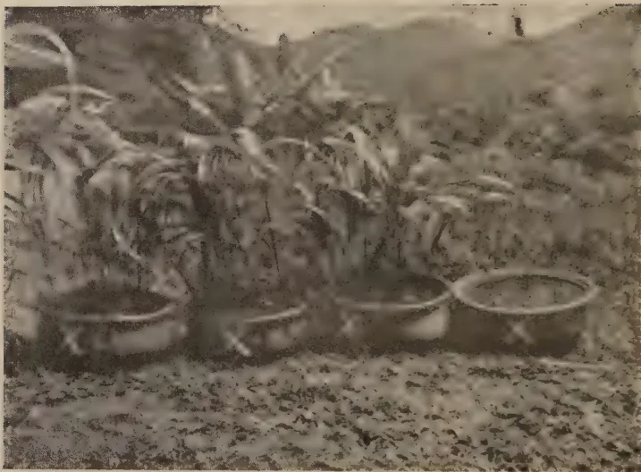
A black and white photograph showing four pots of plants arranged in a row on a grassy field. The plants are tall and leafy, likely sorghum or a similar crop. The background shows a hilly landscape. The pots are arranged from left to right, corresponding to the four treatments listed in the caption below.Left to right—
approximately ft. was divided into three beds of . All three beds were uniformly manured with Gr. Cake and ashes. The middle bed was given Rock phosphate at approximately 250 lb. per acre. Almost from the start this bed ran away from the other two. At one time the plants were about twice as high, but, having reached nearly the normal maximum, the others are now slowly catching them up.
It is, of course, established that heavy starch producers, such as potatoes, require much potash, but it is obvious that no amount of potash can effectively function if phosphoric is so lacking as to limit growth. On the other hand, if addition of phosphoric enables the plant to put up its "factory" in appreciably shorter time, relatively cheap applications may materially expedite the food drive.
The Chatties.—40 of these were bought. They were approximately 5" deep with mouths closely averaging 10" diameter, which was very nearly the maximum diameter. Holes were knocked in the bottom for drainage. The experiment was started on April 30, 1939.
Twenty chatties were marked 1 to 20 and the others marked 1x to 20 x. The first series were filled with equal amounts of well mixed and sieved samples of soil taken from the filled holes in the field. These were called the "Top-Soil" series.
The X series were filled with well mixed samples of the subsoil taken from various parts of the clearing. These were called the "Red Soil" series.
All 40 chatties were manured with 2 gm. each, separately weighed, of Sulphate of Ammonia, and .7 gm. of Muriate of Potash. This was equivalent to 70 lb. per acre of Nitrogen and Potash.
These applications of phosphate were based on current and more or less normal prices. The method is open to scientific criticism, such experiments usually being laid down with equal amounts of P2O5, but the writer wanted to know, as soon as possible, which vehicle of phosphate would give the best return for equal amounts spent.
38The pots were sown with 10 maize seeds each, later thinned to 5 seedlings. Tested with a B. D. H. Soil Indicator all showed an equal and slight acid reaction. They were changed round daily to ensure their receiving equal amounts of water and light.
On June 14th, 45 days after planting, all chatties in the top-soil series (except the first one of each, Nos. 1, 6, 11, 16) were dug up, roots carefully washed, and put into the hot loft to dry in separate numbered pans. When very thoroughly dried each lot was weighed.
| DRY WEIGHTS IN GRAMMES OF WHOLE PLANTS IN TOP-SOIL | |||||
|---|---|---|---|---|---|
| Replica-tions | Super-phosphate | Safaga Phos. | Basic Slag. | Controls. | Totals |
| 1 | .. 41.0 | .. 50.5 | .. 52.5 | .. 33.5 | .. 177.5 |
| 2 | .. 48.5 | .. 59.5 | .. 56.5 | .. 34.0 | .. 198.5 |
| 3 | .. 51.5 | .. 52.5 | .. 41.0 | .. 29.0 | .. 174.0 |
| 4 | .. 49.5 | .. 40.0 | .. 51.5 | .. 24.5 | .. 165.5 |
| Totals | .. 190.5 | 202.5 | 201.5 | 121.0 | 715.5 |
| Means of 4 | .. 47.6 | 50.6 | 50.4 | 30.2 | (44.7) |
The Standard Error of a mean of 4 = 2.9
| Significant difference (1 in 20 odds) | = 9.3 | Per cent of Controls | 30.8% |
| " (1 in 100 odds) | = 13.3 | " | 44.3% |
| " Super minus Control | = 17.4 | (58%) | |
| " Saf. Phos.— " | = 20.4 | (67%) | |
| " Basic Slag.— " | = 20.2 | (67%) |
The effect of phosphate in all three forms is highly significant.
The Sub-Soil Series.—On the 27th June, i.e., 57 days after planting, the "red-earth" pots were dug up, washed and dried in the hot loft.
| DRY WEIGHTS IN GRAMMES OF WHOLE PLANTS IN SUB-SOIL SERIES | ||||
|---|---|---|---|---|
| Replica-tions | Super-phosphate | Safaga Phos. | Basic Slag. | Controls |
| 1 | .. 30.5 | .. 30.5 | .. 14.5 | .. 0.5 |
| 2 | .. 12.0 | .. 45.5 | .. 21.5 | .. 1.5 |
| 3 | .. 26.0 | .. 25.5 | .. 27.0 | .. 1.0 |
| 4 | .. 29.5 | .. 65.5 | .. 22.5 | .. 1.0 |
| Totals | .. 98.0 | 167.0 | 85.5 | 4.0 |
| Means of 4 | .. 24.5 | 41.8 | 21.4 | 1.0 |
In this series the differences in favour of phosphoric are so marked that statistical analysis would only unnecessarily prolong the account of a small experiment. The Controls grew barely an inch high and, as plants, were a complete failure in every case, whereas the Safaga phos. pots grew to a weight no less than 41.8 times their weight. In this series the differences between
39the three vehicles of phosphoric are of interest. They are probably significant and certainly merit further inquiry in view of the deficiency of humus in replanted soils.
In both the Top-Soil and Sub-Soil series one chatty of each treatment and one of each of the controls was kept back and weighed up, after drying, on the 26th July. They were dug up 72 days after planting and appeared to be beginning to stale on account of lack of root room. Although this reduced the statistical value of the two series previously detailed it was considered advisable, in order to determine how long a similar experiment might be run in future. The dry weights in grammes were as follows :—
| Top-Soil | Sub-Soil | |||
|---|---|---|---|---|
| Superphos | .. | 114 | .. | 39 |
| Safaga Phos. | .. | 124 | .. | 34 |
| Basic Slag. | .. | 111 | .. | 32 |
| Controls .. | .. | 86 | .. | 4 |
As these two series have only one Control in each they are not capable of statistical analysis, but, combined with the previous figures, they clearly indicate, in the case of the Sub-Soil series, the deficiency of phosphoric.
Summary.—The results of the experiment show that, in the soils examined, particularly the Sub-Soil, the lack of phosphoric is a serious limiting factor in growth. They seem also to indicate that Ground Rock phosphate is the best money value in these conditions.
In conclusion, my thanks are due to Mr. T. E. H. O'Brien, Director of the Rubber Research Scheme (Ceylon), and to his officers, Dr. Whelan for his encouraging comments, and to Mr. Clement de Silva for the trouble he has taken to examine and improve on my statistical figures.
40THE urgent need for increasing Ceylon's production of rice is well known. A great increase in the acreage under paddy is necessary but the need to improve the yield from existing paddy lands is of equal or even greater importance.
Experiments have shown that on an average an increase of 8 bushels per acre can be obtained by the practice of harrowing the young growing paddy. It is computed that if on only half of the area now under paddy in Ceylon (the wooden toothed harrow is used in the preparation of soil and the crop harrowed later) an increased output of no less than 6,400,000 bushels of paddy could be obtained. That increased output as a result of a simple agricultural operation would be equivalent to the addition of an extra 160,000 acres of paddy land to our existing acreage.
The immediate and general adoption of this simple, economical and effective treatment is of the very greatest importance. Cultivators who adopt the method for the first time are likely to be alarmed at what looks like havoc caused by harrowing. There is no need to be alarmed, all the plants which fall over or are uprooted in the process will recover, reassume their erect position and within a few days the foliage will turn a darker green. This note is intended to make plain why, how and when harrowing of the growing crop is carried out.
Why Harrowing is done. Because it is a simple and economical method of stimulating root growth, stirring and aerating the soil, and reducing weed growth and as a consequence increasing the yield.
The cost of the operation is about Re. 1.50 per acre and the increase in yield that can be expected is anything between 6 to 12 bushels per acre.
When Harrowing is done.—The field is harrowed 3 to 4 weeks after the seed has been sown broadcast.
How Harrowing is done.—Impound about 3 inches of water in the field and let it stand overnight. The following morning harrow the crop in standing water using the wooden toothed harrow (of which a sketch is attached) going over the field once. Any implement on the same principle as the wooden toothed harrow will serve the purpose. The harrow shown
Plan of Front View
Dimensions (in inches):
Inset Dimensions (in inches):
Plan of Side View
Dimensions and Angles:
Plan of Side View
ground level
Survey Dept. Ceylon.
25-9-42
[Faint page: no legible print of its own could be verified; text withheld (stage 4 review list)]
This image shows a blank, aged page with a light beige or cream color. The surface has a subtle texture and slight discoloration, characteristic of old paper. There are no markings, text, or illustrations on the page. 41in the sketch costs about Rs. 3 and is very suitable, it may also be used for preparing the fields before sowing the seed. Muzzle the buffaloes with an open mesh net to prevent them browsing on the young paddy plants while at work. The harrow should be weighted either by riding on it or by means of a heavy stone except when working on marshy patches.
From time to time lift the harrow and remove plants from the "teeth" of the harrow when they become clogged.
The following day regulate the depth of water in the field to cover the soil, lightly weed the crop, and fill any vacancies which may have occurred as a result of faulty levelling, washaways, &c., by transplanting seedlings from thickly sown patches. In wind swept areas plant the seedlings slightly inclined towards the wind.
In very marshy fields or where the terraces are so narrow that the harrow drawn by buffaloes cannot be used, use hand implements for stirring the soil.
After Care.—Maintain the same depth of water in the field for a period of 5 to 7 days after harrowing to encourage early recovery of the plants and to suppress weeds. In sandy soils the period should be from 7 to 8 days.
If suitable and soluble quick acting manure such as nicifos, ammonium sulphate, &c., should be available, a dressing can be given with advantage about one week after harrowing. When this is to be done, drain the field, allow the dew on the plants to dry off in the morning sun, spread the manure and irrigate the field lightly on the following day. Resume the normal irrigation on the third day.
In areas dependent entirely on rain water, harrow the crop in about 3 inches of water and do not reduce the water on the day after harrowing. The depth of 2 to 3 inches of water should be maintained for about one week. If, however, rain water accumulates in the field regulate the depth of water.
42T. H. PARSONS, F.L.S., F.R.H.S.,
CURATOR, ROYAL BOTANIC GARDENS, PERADENIYA
TO revert again to garden events proper, the main operations in 1923 included a further reduction in the level of the Main Central Drive at its junction with the river drive at the northern end. The hillock here was cut down some years ago and on the present occasion the excess soil from further levelling was used to fill up depressions to form a short branch road to enable traffic to turn both right and left on reaching the river drive. Previously the turn to right could not be negotiated by motor cars.
The area when finished was turfed over and the site, though mainly sub-soil, was utilized for the beginning of a Bougainvillaea collection. Very large holes had necessarily to be made and good soil carted to give the plants a start. The interest in this event is that this planting constituted the beginning of the very fine collection of Bougainvillaeas which we now possess. Up to this time the gardens had been content with the mauve varieties and the very fine Bougainvillaea spectabilis var. laterita only. An enthusiastic grower of these plants, a planter from Padukka, presented us with the Bangalore varieties Bougainvillae "Maharaja of Mysore" and "Mrs. Fraser" and these were planted in the new site together with those of a few varieties obtained elsewhere. It made a collection of sorts, though a meagre one.
Since that date we have acquired many new varieties from India, from Egypt, from Kew and from English Nurserymen. Except for three, all the varieties propagated well and little time elapsed before these were being circulated widely to the public from rooted cuttings. The Bougainvillaea "Rosa-Catalina", B. laterita and B. brasiliensis still defy all efforts at propagating freely, though special graftings, solar propagator rootings, and plant hormone methods have been tried. The collection here is now a wide one and these were summarized, recorded, described and published in an article in the Tropical Agriculturist of December, 1935.
43This article aroused much interest throughout other parts of the tropics and sub-tropics and led to many applications for cuttings or plants of our varieties. The despatch of cuttings abroad with ends sealed with paraffin wax and packed in hermetically sealed tins is a frequent occurrence in the routine of these gardens.
A perennial request is for the white Bougainvillaea which we and others are unable to supply as it has not yet been seen. Correspondents and visitors however persist that they have heard from someone else who had seen it in some other person's garden, so why was it not at the Royal Botanic Gardens. Discussing this matter with horticultural authorities in England it was considered very doubtful if, by artificial means, the dominant mauve or purple of these varieties would ever be eliminated and probably only by a chance seedling. Very interesting to record therefore is a paragraph in the London and "Gardener's Chronicle" of February 8, 1941, which states:—
"The American horticultural Press records the discovery of a Bougainvillaea with white flowers (bracts). A single plant of this novelty was sent by aeroplane from South America to Mr. James B. Hendry, Everglades Nursery, Fort Myres, Florida, who insured it for five thousand dollars against possible loss through cold, disease and insect pests. It appears that Mr. Hendry has raised many hybrid Bougainvillaeas, but never a white one".
By a coincidence, a long drought in the year the local article was published (1935) resulted in some of our plants producing seed for the first time. The seed was carefully tended and many plants raised, a few of which were, in colour, new to our collection and are valuable to such. The majority reverted however to the common parents Bougainvillaea glabra or Bougainvillaea spectabilis, with a few very similar to Bougainvillaea glabra var. Sanderiana.
The removal of a small landmark occurred in the demolition of the lecture hall erected in the spice grove in 1915 and used by the School of Tropical Agriculture from its formation till 1920-1921 when their more permanent building in Irene Hostel grounds opposite the gardens was erected. Twenty years later, in 1940, this latter building was vacated for more commodious accommodation at the Experiment Station, Peradeniya. The iron frame of the original lecture hall was utilized to form a very useful plant shed nearby for housing stocks of pot plants and the like.
The old plot of Assam Hybrid tea plants in section F of the Arboretum which were introduced here in 1867, and which constitute the forbears of a deal of our local tea fields, were
44cut back to about 3 feet from the ground, the area weeded and excessive shade reduced. The plants still survive, but neighbouring tree roots combined with that of overhead shade do not allow the bushes to flourish. Better specimens of this historic introduction are however to be seen at Hakgala where the trees have an area allotted to themselves alone.
A further small introduction of the Tung Oil species, Aleurites Fordii and Aleurites montana, was made this year. Our previous introduction in 1917 had not been successful, and in the present instance the germination of A. Fordii was a failure, but a dozen of A. montana were successful. These were planted in the various gardens and at the Experiment Station, Peradeniya, and one tree at the latter station, at the time of writing, has a spread of 28 feet and a height of 12 to 14 feet. Yield of fruits fluctuate, the largest crop from this tree being 375 fruits (3 seed to a fruit) in 1932. There are possibilities in this crop if the necessary selection of type is made. This will be more freely dealt with in later notes, as a large introduction of seed and a wide distribution was made in the years 1929-31.
The introduction in 1922 of a small supply of seed of the Chaulmoogra Oil tree (Taraktogenos Kurzii), the oil of which is used for leprosy, resulted in a batch of seedlings that were this year (1923) distributed, mostly to Heneratgoda Gardens, and a few planted in these gardens.
(1924)
The year 1924 saw further new improvements undertaken throughout the gardens. The whole of the river banks were overhauled and brought into condition for fodder grass to enable us to become self-supporting to the garden cattle. The varieties planted were mostly Panicum maxicum or Guinea grass and Paspalum virgatum. A large quantity of the wild sugar cane (Saccharum arundinaceum) had to be eradicated in the process.
With the increase of road traffic in the Gardens consequent upon the motor car having come to stay, our roads began to crumble under the strain. Lacking any solid foundation as they did, and with only a gravelled surface, the question of restriction of car traffic in the gardens received careful consideration. It was eventually decided to accept the position and endeavour to obtain funds for macadamising the whole of the Gardens roads and in the meantime to round off sharp corners and the like in anticipation of increased traffic. To this end the sharp bend at East Drive in the Arboretum was reduced to a much more gentle curve, the bend above South Garden lake was widened and other sections taken in hand to prepare the way.
45Plantings continued to be made in the Arboretum, the Pine-tum and the Palmetum, a number of palms in the latter having already, in 8 years, reached the fruiting stage. Of the Talipot palms in row below the Curator's Office, which were planted in 1907, three at the lower end of the row had begun to form a stem, that is in about 14 years from planting. (One of the three flowered at the end of 1939, fruited in 1940, and was cut down in 1941, i.e., 34 years from planting).
For the past two years much of the Curator's time had been taken up in the revision and preparation of an alphabetical list of all plants growing in the Royal Botanic Gardens to supersede Trimen's "Hortus Zeylanicus" published in 1888, much of which had become out of date. Much material was sent to the herbarium for identification or re-identification and all introductions established here since 1888 have been included in the new catalogue.
An introduction was made this year by the way of seed of a rare nut (Lecythis Ollaria), a tree nearly related to the "Brazil" and "Sapucaia" nuts which bear a valuable edible nut. A Mr. Corydon Matthews had, in his explorations in South America, collected seed of this rare tree and was very interested in its distribution to the East. Having presented a few of the seed to Kew he obtained from the Kew authorities the addresses of all botanic gardens and such like in the East and himself undertook the task of distribution. He called here in September this year leaving a few seed for germinating purposes and proceeding further east with the remaining seed.
In 1927 he revisited the gardens to inquire as to the progress in the raising of this seed. We had in fact been successful in raising one healthy plant, this having been planted out in its order in the Arboretum and was then about to 2 feet high. The plant was photographed in all aspects by Mr. Matthews who expressed his delight in seeing at least one plant resulting in his efforts, as in no other institution to whom he had presented the seed had success been attained up to that date.
A few years afterwards, in 1929, an elderly lady and gentleman called at this office and introduced themselves as the parents of Mr. Corydon Matthews, whom they were grieved to state had died of fever on his return from his world tour. They were in possession of all notes of his tour which included an enthusiastic account of the young tree at Peradeniya. The tree, then having reached 5 feet in height, was again photographed and particulars noted, with a request that we give this tree every possible attention. The tree is now a very fine specimen of 25 feet in height and 19 feet branch spread, but has not yet fruited. The above is recorded because, although largely of private interest, it is the multiplication of such instances that in time make a garden famous.
46On September 3rd the Curator proceeded to Hakgala to act for Mr. Nock, who left the Island on long leave on the same day.
(1925)
The year 1925 was one of the great changes in the Gardens. It saw the retirement on August 13th after 20 years' service of Mr. T. Petch, Botanist and Mycologist. Mr. H. F. Macmillan also retired on July 28th from the post of Superintendent of Botanic Gardens. Mr. Macmillan had performed 30 years' service in the Colony and was responsible for very considerable improvements in the Botanic Gardens and in horticultural work generally.
With these retirements advantage was taken of the opportunity of reorganizing the botanical side of the work of the Department, a full time Botanist in Mr. A. H. G. Alston being appointed on August 3rd to take up investigations on specimens sent for examination, to issue a further supplementary volume of Trimen's "Flora of Ceylon" and to make a critical examination of the Ceylon grasses and ferns. The duties of the Superintendent of Botanic Gardens were in the future to be combined with those of the present Curator.
Apart from the now regular and routine work necessitated in the upkeep of the botanical collections, a special effort was made to overhaul and improve the floricultural sections of the gardens.
The Flower Garden was the venue of many alterations, the lawn areas being specially prepared for the advent of our first motor mowing machine expected the following year. The frontage area near the Main gate was also smoothed off and prepared, and the spice grove, the grass sides of the Palmyrah Avenues, the whole of the Great Circle, and mowing sections of the South Gardens closely scythed or treated with the hand mower to bring the areas in readiness for the larger and heavier motor mower.
The Main Drive borders called for drastic treatment at this time having become a mass of old and overgrown specimens due to constant bi-monthly pruning over a long period. Old and unshapely shrubs were removed, overhead shade from the large trees considerably reduced and the borders amply trenched to check all roots of surrounding and overhead trees. The tiles defining the border and Main Drive were also repaired, all corner stones shaped and re-erected and a new type of wooden label instituted for perennial plant purposes and all plants labelled. The water service here was improved also, the 4" pipe running along this drive being tapped and 5 hydrants put in at regular distances. The urgency of road improvement was again
47emphasized this year, and a scheme was drawn up whereby all roads and paths should be remade with road metal, with brick edging to all roads and other improvements coincident with this. The Director was furnished with particulars of requirements and arrangements made to start this improvement from the next financial year. For the time being all roads were put in order to the best of our resources.
Other improvements included further plantings of new Bougainvilleas near the ferry, the older plants here having flowered and brightened up this end of the garden immensely. An incinerator, the first of its kind, was erected near the cattle shed for destruction and disposal of all garden rubbish to allow us to eliminate the rubbish pits that rendered certain garden areas unsightly.
The experiment of growing the common Lotus Lily (Nelumbium nuciferum) in the south garden lake was only too successful, the plants having become very firmly established and rampant. An addition of 20 Gourami fish was received from the Colombo Museum in an effort to keep the plant in check.
Their Majesties the King and Queen of Belgium visited Ceylon this year and on October 25th were entertained at the Gardens. His Majesty took the opportunity to plant a tree of the handsome Burma flowering tree (Amherstia nobilis) in a site off the Great Circle to commemorate their visit to these Gardens.
The alphabetical list of plants growing in the Royal Botanic Gardens, preparations of which were completed this year, was sent to the Press. The publication is a long felt want and has since been of invaluable assistance to the Gardens. It was further decided to prepare up-to-date guide books to the Royal Botanic Gardens, Peradeniya, and the branch gardens and work on these was begun during the year.
(1926)
In 1926, improvements on a much larger scale than hitherto were undertaken, the landscape features of the Gardens being given special attention. In the botanical collections the regular routine operations of steady improvement both in content and appearance were now beginning to have a marked effect on the general appearance of the Gardens. Efforts were this year mostly concentrated on the flower garden and frontage.
In view of the absence of any suitable means of support for the more handsome woody and large growing climbers of the Gardens, an erection was made of a large permanent archway or pergola along the east side and outskirts of the flower garden. The individual archway sections were 10 feet high and 13 feet wide and linked up with one another to form a pergola of 365 feet in length. The arches are of steel tubes (boiler tubes of unserviceable engines of the Ceylon Government Railway) fixed in cement
48base with sufficient wire netting on the sides and top for supporting the climbers. The tube ends were burred over, flattened and holed, the tops of uprights being turned over at right angles and clamped to the horizontal tubes by nuts and bolts. This solid structure afforded us ample scope on which to establish specimens of all woody types and has since proved a valuable asset to the Gardens. The structure at the time of writing, 15 years after, is as solid as at the time of erection. A new 6 feet path running through the pergola was made, brick-edged, metalled and tarred.
At the same time, and to set off the western and opposite side of the flower garden, a new border of 550 feet in length and 15 feet wide, extending outward from the old shrubby margin, was opened and planted, thus converting into colour the whole of the margin of this side of the flower garden. The planting of perennials in large masses has been a feature of this part of the Gardens in the succeeding years.
To cope with the increase of motor traffic in the Gardens a commencement was this year made on road improvements by means of a solid foundation of rock or stone with a macadam surface. A special grant of Rs. 5,000 annually for this and the next two years was obtained for the purpose and as the necessary materials were unobtainable in the gardens, outside contracts were entered into for the supply of metal, the consolidation being done by garden labour. The whole of the Lake Drive, a portion of the Main Central Drive, portions of the South Garden Drive, the whole of the Liana Drive and the Palmyrah Drive was completed this year. The road edges were lined with brick and pointed with cement in preference to the former plain grass verges or line of border plants, and the neatness in appearance of all these drives was much enhanced.
Chief of the new work, however, were improvements made to the garden frontage and entrance. The work that commenced here the previous year was continued, the whole frontage being re-aligned into one uniform line, the uneven banks being made up and shaped, the barbed wire fence re-erected, and the bungalow entrance gates brought into alignment with the fencing. A hedge of Madras thorn, from seeds sown in situ, was established and a well formed hedge brought along. This still exists.
The large palm group inside the main entrance gates, the contents of which had become much overgrown, unsightly, and of such immense height as to constitute practically all stems, was reconstructed. The palms, by this time represented by much better specimens in the Palmetum proper, were all removed and the area thoroughly trenched and dug over to remove all roots. This area when thus opened was found to
49be much out of alignment with the Main Central Drive and the entrance gates, necessitating cutting away on one side and enlarging on the other in order to form the true oval. The drive had also to be adjusted to the newly formed oval plot. The elevation of the area was also lowered and brought into conformity with the purpose desired, i.e., the formation of a large grass lawn area with groups of flower beds, the whole being turfed with entirely new grass. One large centre bed, symmetrical with the oval area of lawn, was made in the centre with eight other beds on the fringes of the area and the whole planted up with groups of the choicest Canna, and the scarlet Salvia. The effect when all the bed contents are in flower is a striking one.
This improvement paved the way for the reconstruction of the garden gates and the change over of the Lodge, arranged for the following year.
The Allison and Armour Expedition visited Ceylon and spent approximately six weeks in the Gardens collecting various types of material for shipment to America for trial and experiment there. The expedition was led by Dr. David Fanchild, the United States Department of Agriculture Plant Explorer and an old correspondent and friend of these Gardens. Much plant and seed material was collected by them, particularly of the palms and the Garcinias, the Mangosteen being one much desired fruit America had till then failed to introduce successfully. The up-to-date methods adopted for the packing of plants and seed material were a source of interest and much help to all garden officers here.
This year also saw the beginning of some improvement in fruit cultivation, though 10 further years were to elapse before such work was co-ordinated in the functions of a Horticultural Officer for fruit work. At this time there were no nurserymen or fruit suppliers of any standing in the Island (and the position is regrettably much the same at the time of writing), and requirements in this respect were met by Peradeniya and branch gardens, with few facilities however for this work. The output was restricted to seedlings mostly, but with citrus this did not carry us far. In January of this year a very interesting consignment of grape fruit seed was received from the U. S. Department of America under their inventory Number F. H. 59275. The seed was obtained from an orchard in Maimi, Florida, from a tree reputed to produce seedlings practically true to type, the type being the "Walters" variety of grape-fruit. The seeds were carefully sown and watched and by the end of the year these choice seedlings were available for disposal. An advertisement was placed in the Government Gazette and the local newspapers and as a result 720 of these plants were
50distributed to the numerous applicants in consignments varying from 2 to 12 plants per applicant. In addition 340 were sent out gratis to all school gardens, and to various Government institutions.
Unfortunately, however, little seems to have resulted from this wide distribution, though the Horticultural Officer in his fruit surveys of recent years came across trees here and there, at Bandarawela, at Koslanda, at Bibile and at Kegalla, and in each case the trees were vigorous and producing fine crops of well flavoured fruit. The progeny of the trees sent to Bibile is at the moment represented in an orchard nearby, at Arangala estate, and the first fruits of these trees too have proved of remarkably good size, texture and flavour.
At this time a plot of seedling grapefruit at the Experiment Station, Peradeniya, were in full fruit and a careful study was made of their quality and other characters. The seeds from which this plantation had been raised had been received in 1910 from the old tree in the Kegalla park, probably among the first introductions of this variety of fruit to Ceylon (the Gardens incidentally introduced the first two plants as a special fruiting variety of pumelo, from Kew in 1897) and a plot of 15 to 20 trees of good and uniform size were available for this purpose. In the result of this and the following years' testings also, one tree F5/3 was considered the best fruiting tree for budwood purposes and F4/5 as the most vigorous for root-stock purposes. The decision was made to lay down adequate nurseries of citrus for budding purposes and to stop the issue wherever possible of further supply of seedlings of citrus fruit.
A good batch of seedlings of Chaulmoogra oil plants of the 2 species Taraktogenos Kurzii and Hydnocarpus Wightiana were raised this year and potted ready for distribution next year. The Taraktogenos seed was received from the Conservator of Forests, Burma, and the Hydnocarpus from the Royal Botanic Gardens, Calcutta.
A motor mower for the garden lawns, the first of its kind, was obtained from England this year. The machine was a 24" Ransomes Mower with a 3 h.p. air cooled engine, capable of mowing 4 acres a day and weighing a little over 5 cwts. It served its purpose well but experience soon taught us that its weight was a disadvantage in the wet monsoon months. In the later years, a lighter 16" model has proved to be more satisfactory and economical and this type is now in general use here.
It is recorded in this year's notes that the true Sago palm Metroxylon Sagu introduced here in 1880 from Java flowered and produced fertile fruit for the first time. The plant is
51propagated mostly by suckers and though it had flowered here previously, had not produced fertile fruit. The Sago is obtained from the pith of the tree stem if felled at time of flowering and before the setting of seed.
Another interesting item is that on the receding high flood waters of July 27th, when the river rose to 29 feet and inundated the garden lake, the whole of the Gourami fish were carried into the Mahaweliganga. By the end of December of this same year, only 6 months after, the water weed, Hydrilla verticillata reappeared after a lapse of 10 years and infested and choked up the whole lake. A further stock of Gourami fish was later obtained, since when this water weed has not reappeared.
Demonstrations in rubber budding were given periodically during the year. These were advertised and freely attended by interested visitors. Instructions were also given intermittently to planters as required, and a class of 12 conductors of estates assembled at the gardens nurseries from December 18th to 22nd for a four-day course in bud-grafting.
A revision of the Guide to the Royal Botanic Gardens, Peradeniya, was undertaken this year, supplemented with a collection of photographs of the more striking trees and shrubs, and forwarded to the printers. The alphabetical list of plants of the Royal Botanic Gardens, completed last year, was received from the Government Printer this year and is now of invaluable assistance to the gardens.
(1927)
The year 1927 was another period of major improvement, including improvements to botanical collections; further planting of interesting species; identification of orders by iron sign-boards, glazed and enamelled, denoting name of the order; the formation of sectional maps of 10 yards to the inch for arboretum sections A to F, and further improvements of the flower garden sections with a continuation of the work of remetalling and brick-edging roads, and elimination of the too many side drains to paths and roads which previously disfigured these areas.
The large scheme of alterations to the garden frontage also was completed this year. The old Entrance Lodge on the right hand side was pulled down and re-erected at the entrance to the left side of the main gates. The gate pillars were dismantled and re-erected in alignment with the Main Central Drive, with the addition of wrought iron flanges of similar design to the gates, in lieu of the former brick wall flanges, the whole presenting a more substantial and improved appearance than hitherto. The two approach roads to the gardens entrance were thrown well back and considerably
52widened, thus facilitating a safer and more spacious entrance and exit to the gardens. Suitable cement coping stone has been formed along the road edges, extending around the edges of the outside triangle and right and left of the entrance on the garden side for a considerable distance. The area immediately inside the gates was levelled and turfed and two new beds formed right and left of the entrance gates. The two existing Flamboyant trees were planted in these beds the following year.
The nutmeg grove to the right of the entrance was also attended to and given the character it now possesses. For this purpose this area, hitherto used for leafmould and rubbish pits, was filled up and levelled over, new paths and new beds made, planned and planted with additional species, the area being completed to much the same design as it remains at present. It necessitated the widening, metalling, brick-edging and tarring of the two older paths and a new additional path was made running from the top of the Main Drive through to the flower garden circle with a forked side path leading to the Liana Drive. A cross path was made to link up these 3 paths through the grove, and the main road leading to the Curator's Office was deviated to bring it in line with the new area opened up.
The removal of the old carpenters' shed which occupied part of this grove (probably from the institution of the gardens) was necessitated since it disfigured the now improved and laid out area. It was in fact in the following year pulled down and a new structure created on a less conspicuous site near the muster ground.
The preliminaries for the eventual production of a better quality of fruit in the Island were given much attention, and imports of some of the best grapefruit and avocado pear were obtained from America and from Trinidad. They comprised 8 varieties of grapefruit and 7 of avocado pear, a few of which were planted in the garden and the majority planted to form an orchard in the Experiment Station, Peradeniya. The plants were introduced mainly to provide budding material for the budding operations then being taken up at our nurseries.
The budded avocado plants were imported from the Armstrong Nurseries, California, and from the U. S. Department of Agriculture, Washington. They were, however, budded on to the Mexican type, a sub-tropic species, and after a few years this rootstock was found to be incompatible with local soil conditions here. Budding from all these importations on to the local (West Indian) stock was therefore made and the gardens now possess a very useful collection of most of the best varieties
53of this plant now in cultivation. At the time of writing there are in the Gardens fruiting trees of the varieties Lyon, St. Anne's Dutton, Pollock, Trapp's, Gottfried, Puebla, Harmon, Feurte and a few purple fruited seedlings. The effect of propaganda is, however, very slow in respect of this fruit which is so little valued here yet highly valued in America and the West Indies for its vitamin content.
Larger stock of citrus and other seedlings raised last year were beginning to become available and in this year 150 budded citrus were rapidly disposed of with 650 budded and coming along, and beds for 5,000 more seedlings prepared and sown. With this new work, however, our difficulties soon began to arise. The only available rootstocks were pummelo from Peradeniya and Seville orange from the Hakgala trees, and as the buddings progressed and multiplied it was found that these rootstocks, though compatible, did not meet full requirements. Budwood too was difficult to obtain, as although the quality of the parent trees was good the material itself had many drawbacks and budding results were not too successful.
We had yet to learn that a parent tree has to be prepared (by pruning and manuring) before good budding material can be obtained, and further that you cannot treat and prepare the other person's trees as you would your own. We were in fact indebted to persons outside for all budwood at this stage, the original donors of budwood being the Superintendents of Wye estate, Bandarawela; Ferndale, Rangala; Mattakelle, Talawakele; Ambalamana, Galaha; and Mr. Rockwood of Colombo. Attention to this rootstock and parent tree question seemed urgently called for and such, to the best of our ability, was taken up in subsequent years.
The question of opening up areas of the Chaulmoogra oil tree, from the seed of which is extracted a valuable oil used in the cure of leprosy, cropped up this year, and 95 Taraktogenos Kurzii and 400 Hydnocarpus wightiana were raised and established in bamboo pots early in the year. These were in October and November planting weather despatched to Heneratgoda and the Experiment Station, Peradeniya, and for planting in the following numbers:—50 Taraktogenos and 250 Hydnocarpus to the Experiment Station, Peradeniya, and 45 and 150 respectively to the Botanic Gardens at Heneratgoda (now Gampaha). These, therefore, would be the first plantations of these trees in the Island, and distribution was made to estates in later years. Both trees are exotic, Taraktogenos from Burma and Siam and Hydnocarpus from Siam, and the oil from both trees is used as a cure for leprosy. The oil of our local species the "Makulu" has not this property but the fruits are poisonous and used for poisoning fish.
54The last of the talipot palms in the South Garden old avenue, famous throughout the tropics, ripened fruit this year. The seed was collected and according to usual custom distributed to other botanic gardens, and some seeds were reserved for the planting up of a new avenue. The old palms were cut down after fruiting and the area thoroughly prepared for the establishment of another and larger avenue of these attractive palms. In the old avenue one row had been planted 3 feet above road level on the left, and the other 5 feet below road level, on the right. This was therefore remedied in forming the new avenue. The area for the site was levelled over and extended, and large 4 feet square holes dug and manured, the seed being planted in situ. These germinated well and in the following year they were thinned out to one plant per hole.
The Talipot palm flowers once and then dies, and to this day there had been no authentic record of the actual length of life of this palm, nor as to whether, as some botanists contend, the Talipot is a gregarious flowerer. The old avenue in the gardens affords some information in this respect and Petch in a note in the Annals of the Royal Botanic Gardens in 1924 discussed the subject very fully. A summary in brief is as follows :—
“The old avenue was planted in 1881, 30 seedlings being planted out in June of that year. Losses were considerable and further plantings were made in July, 1882. The number of survivors and replants at that time is not stated nor is information afforded as to any later plantings. Such plantings however must have occurred as two of the palms in the avenue were in 1918 very small and evidently planted in the present century.
The 1881 seedlings were most probably the progeny of a Talipot that flowered in the gardens in 1877 and fruited in 1879 and the replants in 1882 were probably of the same origin”.
On the present writer's arrival here in 1914 the avenue consisted of 20 palms. Of these seven flowered in 1918, eight in 1922 and three in 1926. The remaining two, being half grown, were cut down this year to allow the formation of the new avenue already described. It would be reasonable to suppose therefore that the 1881 seedlings flowered in 1918, the 1882 replants, retarded by retention in nursery beds or pots, flowered in 1922 and the later plantings in 1926. The dates are however not sufficiently precise to satisfy the scientific mind and the importance of keeping strict records of such long lived plants is emphasized here.
There are, however, other Talipots in the garden whose history is now known with accuracy. A chance seedling, on the hill near the Botanist's office, from the former talipot that
55flowered there in 1903 and fruited in 1905, has reached maturity and flowered in the second half of 1939, fruited in 1940 and early 1941, and was removed in June, 1941. The known age therefore of this chance seedling from seed is 34 to 35 years. Further, the row of Talipot palms running alongside the drive from the Orchid House to River Drive were planted as nursery seedlings in 1907 from the Talipot that flowered in the vicinity in 1900. One of these, at the lower end, flowered and fruited at exactly the same period as the chance seedling but the remaining 13 plants in row have not yet flowered and are of varying height, indicating a probable wide range between their eventual flowering. The age of this fruiting tree is therefore definitely known to be 40 years. This upsets the theory of gregarious flowering of this species, and the later flowering of the talipots in row as compared with the chance seedling is doubtless due to restriction of growth in the young stages, since 7 years elapsed between the sowing of the seed and the planting out of these seedlings.
The new avenue in the South Garden now comprises eleven plants on each side, the spacing between plants being 30 feet and the distance between the rows 50 feet. For record purposes it should be mentioned that the parents of the new avenue plants were the trees of the old avenue which flowered in 1926 and fruited in 1927. The actual planting of the seed in situ was made on December 18th, 1927.
At the time of writing (1941) the palms in this new avenue, with three exceptions, are outstanding in size and vigour even for this giant species. All on the right hand side are equally vigorous having attained a height of 30 feet and all have formed stems varying from 5 feet to 9 feet from ground level. On the left hand side 8 have already reached a height of 30 feet and formed stems, the largest 9 feet from the ground level, whilst two others are yet without stems and approximately 15 feet in height. The remaining plant, the first in the left hand row, is a 2-year old seedling planted out here in 1939, the original and succeeding replants having failed owing to poor soil and proximity to the large Cannon Ball and other trees whose roots hamper the development of the plant in the young stages.
Two interesting conifer introductions this year were of Pinus Merkusii the Tenasserim pine, and Pinus Caraboea the Cuban pine. There are no indigenous conifers at all in Ceylon and in the low country this group of introduced plants comprises generally only the Araucarias and Agathis of Australia and the Cupressus of California and the Uganda highlands. The interest therefore is the genus Pinus, the species of which are found generally only in north temperate zones and in the mountains of the north tropics. Tropic or sub-tropic species of Pinus are rare.
56The seed of Pinus Merkusii was received from the Department of Forests, Sumatra, the tree being native of parts of Sumatra and Borneo. It attains a height of 50-60 feet or more and grows from elevations of 500 feet to 2,800 feet. The timber is fairly hard and resinous.
Seed of Pinus Caraboea the 'Cuban' pine was received from the United States Department of Agriculture, the habitat of this plant being Cuba and Honduras where it attains a height of 90 to 100 feet. The wood is of good quality and resinous, the tree however prefers low lying wet ground. The seed germinated well and seedlings were put out in the Pinetum and others sent to the various branch gardens. The Pinus Merkusii thrived from the start but Pinus Caraboea growth was slow and stunted, and still remains so. The former has at the time of writing reached a height of 57 feet and is a striking specimen, but the latter still remains stunted, not more than 4 to 5 feet. The position of the Pinetum, on high ground, is doubtless unsuited to this species in spite of our ample rainfall.
57SELECTED ARTICLESKAGDI LIMBU (Citrus aurantifolia, Swingle), AND ITS PRODUCTS*THERE is considerable area under the Indian Lime, locally called Kagdi or Kagzi Limbu, in the Baroda State and Gujerat districts of the Bombay Presidency. Lime trees bear fruits chiefly in the rainy season and winter months, when they do not fetch proper price owing to climatic conditions. When the fruits are in active demand in the hot weather for making Sherbats, &c., the crop is scarce. The growers of limes, therefore, find a good deal of handicap in realizing the maximum profit from their plantations.
In order to preserve lime juice in bottles for use in the hot weather, and other products of limes, so as to make the best use of this valuable fruit, research work was undertaken by the writer at the Fruit Preservation Laboratory, Baroda, with the finances provided by the Baroda State Industries Board. The work done during the last about five years has shown that Kagdi Limbu, which is sold extremely cheap in season, can be preserved in the form of no less than nine different products each having considerable economic possibilities, with the result that not a particle of the fruit goes waste. In this way, the cultivation of Kagdi Limbu can become very lucrative to the grower, and it can develop a rural industry of great potentialities.
Lime juice is a world product. A good deal of bottled lime juice, such as the Roses and Kia-Ora, is imported into India every year. Attention was, therefore, concentrated in the above investigations on bringing out a pure lime juice of fine quality as the main product of limes, which cannot be sold profitably in the fresh condition, during the harvesting season. Ripe, yellow and sound fruits are selected and cleanly washed. The whole fruits are crushed in the Combination Lime Juice Press, specially devised for the purpose, and the juice obtained is allowed to stand in large glass carboys for about 12 days. The heavier particles settle down and the lighter ones float up, leaving clear juice in the centre of the carboys. The clear juice is syphoned out, and filled into clean and sterilized bottles, and preserved by pasteurization at 70°C for 30 minutes closing the bottles air-tight immediately, or else by adding sulphur dioxide in the proportion of 350 parts per million parts of the juice.
It was found that by proper adjustment, the carboy filled with raw juice could be made to stand in an inverted position, in which case, all the oil from rind escaping with the juice while pressing, accumulated at the top of the juice and could be recovered separately without affecting the food value of the juice itself. Oil collected in this way yielded about 2.5 lb. of pure lime oil, valued at Rs. 25 only.
* By S. S. Bhat, M. Ag., Horticulturist to Government, Baroda, in The Rural India Vol. V, No. 4, April, 1942.
58Clarified lime juice is turned into lime cordial of good strength approaching lime juice syrup, by dissolving equal quantity of crystalline cane sugar in it, before bottling. This product is convenient to handle in picnic parties, &c.
The rind of limes left over after the juice is extracted, is mixed with about 20 per cent. of its own weight of common salt, and allowed to mature in China jars or wooden casks. In about a fortnight, the mixture is turned over and allowed to mature further. In about 45 days, a fine mature salted peel is obtained, which can be used as a flavouring and appetising agent at the table.
The salted peel, while still immature, can be spread out in thin layers in shallow trays, and dried in the sun until it becomes crisp. The product obtained contains about 9 per cent. of acid, and can be used with advantage for flavouring curries, &c., just as the common "Kokum or Amsol" is, the cost of the former being much cheaper.
The dried peel of limes, is powdered and sieved through a fine mesh or cloth, and the powder so obtained is extremely tasty, and is used in curries and chutneys or for dusting on bread, &c., at the table in the same way as pepper dust is used. It can be also used with a little hot water after meals or in the mornings, to stimulate digestion and hunger. It is reported to contain vitamin P., which is complementary to vitamin C.
Salted lime peel, when fully mature or earlier, is found to yield excellent pickle if blended with spices and oil to taste. The pickle keeps very well and can be sold to the public in retail shops and hotels as well as any other pickle. It tastes very nearly like pickle made of whole lime fruits in the usual way.
The sediment and floating cell matter obtained during the process of clarification of lime juice as explained above, can be mixed with the salted peel while pickling it, and whatever is left over, can be packed in suitable bottles for use as a metal polish. If mixed with half its quantity of wood ash, it gives far better results than it does when used alone. It is estimated that about 14 per cent. of the weight of fruits is recovered in the form of sediment and cell matter, which can be turned into a metal polish, its performance comparing fairly well with metal polishes now on the market.
The seeds of lime fruits crushed in the Combination Lime Juice Press, remain absolutely undamaged, and can be used successfully for raising seedlings in the nursery.
The work so far done at the Fruit Preservation Laboratory, Baroda, thus shows that kagdi limbu can yield lime juice, lime cordial, lime oil, salted lime peel, dried lime peel, lime peel powder, lime pickle, lime seeds and a metal polish. No part of this fruit is wasted, and the manufacture of these products requires but little capital and can be undertaken in rural areas with advantage. Of these products, lime juice, lime oil, salted peel and lime seeds and metal polish are prepared independently of one another. Lime cordial means the conversion of lime juice into a sweetened product. Dried peel and peel powder and lime pickle are alternatives for the salted peel. In undertaking manufacture and working out economics of these products therefore, it should be borne in mind as to which of these alternatives are more profitable and easier to handle and market. Whichever product is chosen, there is little doubt that the industry is highly paying on the whole, and awaits the enterprising businessman for its exploitation.
59THE term "mixed farming" frequently appears in literature about tropical and sub-tropical agriculture. It seems to be used with a variety of meanings. It may therefore be profitable to explain exactly what the term meant to those who (as we believe) first applied it to a system of farming in the tropics.
The Nigerian Agricultural Department first began to use this term in the Northern Provinces of that Colony in 1923 or 1924 in connection with a programme of field experiments that was then being initiated at its agricultural stations. The meaning, in which that Department (of which I was then head) employed the term, was somewhat different from the sense in which it is used in regard to English farming, or at all events from the sense in which it was used in the Midlands of England thirty years ago.
So far as we knew no one had ever defined very exactly what was meant by this term, even in regard to English agriculture. But in my home district, at all events, to say that a farm was a mixed farm conveyed to one's hearer at least two separate and not logically interdependent facts about that particular farm. To describe a farm as a mixed farm implied that it consisted of considerable proportions both of permanent grass and of arable land. But a second fact was equally definitely conveyed, namely that the basis of the manuring of the arable land was farmyard manure, made on the farm by cattle standing on straw bedding. A grass farm, whether the grass were used for sheep or dairying or what not, did not become a mixed farm merely because some ten per cent. or so of the land was under the plough, growing food for the stock. But neither was an arable farm a mixed farm if sheep-folding was the basis of the manuring of the arable land. Nor, I am sure, would one have described as "mixed" a farm (there were a few such here and there) on which practically no stock at all was kept, and from which everything, hay, straw and roots, as well as grain, was sold off, and where consequently the farmer relied for the maintenance of fertility on the purchase of artificials and of stable manure from the neighbouring town. Even if such a farm had consisted of 50 per cent. of meadow land and 50 per cent. arable, yet no one would have described it as a mixed farm: for it lacked the second essential feature, the making of farmyard manure by neat stock kept on bedding in the winter.
It was also undoubtedly a normal characteristic of a mixed farm that profit was made by the sale of animal products as well as by the sale of grain—profit that might be realized from milk, butter or cheese, by cattle rearing, or fattening, or from all of these. For if a farmer kept stock to make manure he naturally tried to make a profit from the stock. It was thus very nearly true to regard
* By O. T. Faulkner, C.M.G., B.A., Dip. Agric. (Principal, Imperial College of Tropical Agriculture) in "Tropical Agriculture", The Journal of the Imperial College of Tropical Agriculture, Vol. XIX, No. 1, January, 1942.
60this as an essential feature of the English mixed farming system. Yet there were some farms with poor grass land and poor buildings but much arable land, where the stock keeping was reduced to its simplest and least profitable form, that of "running on" store cattle, purchased as yearlings or two-year olds, and sold again later still in store condition. Such a farm, provided it had a fair proportion of grass, was certainly regarded as a mixed farm, while, as already stated, a sheep-folding farm with little grass would be called simply an arable farm. And this in spite of the fact that animal products might well form a much more important item in the receipts of the sheep farm than of the other. Thus it seems that the farmyard manure making was as essential a feature of a mixed farm as the mixture of arable and grass land : but the sale of animal products, though more or less implicit in the term, was yet not quite one of its essential meanings.
We in Nigeria undoubtedly, and quite wittingly, partially misused this term when we adopted it locally : for we had then no concern whatever with permanent pastures or meadows, nor even with temporary leas. We were thinking only of one of the two essential characteristics of English mixed farming, namely, the maintenance of the fertility of the arable land by the use of farmyard manure, consisting largely of bedding. The greater part of the farm would still be devoted to the production of food and cash crops.
The position in Northern Nigeria at that time was that almost all of the three million or so head of cattle that the country possessed were owned by the nomadic "Fulani", while the "Hausa" farmers, with unimportant exceptions, owned no cattle at all. The only connection between the two sections of the population was that when the farmer's harvest was over, the Fulani cattlemen, in return for certain payments in kind, would bring their cattle on to the farm lands for about four months to eat the stubbles of the crops and to manure the fields with their urine. The cattle dung was a comparatively unimportant factor in this manuring process, because even if it was not burnt, as was quite a common practice, it soon became converted into dust and much of it was eventually blown away : for the climate at that time of the year was both intensely dry and very windy. By this "cattle kraaling" as it was called departmentally, it was possible to maintain the fertility of the land very satisfactorily, provided that one had enough cattle on it for a long enough time. But to maintain the fertility of all the fields of the country satisfactorily by this means would have needed many times more cattle than the country supported. In practice only the rich could afford to have their land manured in this way ; the ordinary peasants had to rely on shifting cultivation.
The Agricultural Department was desirous of introducing the use of cattle for ploughing the land and more especially for inter-cultivating the growing crops. For in most districts there was still land to spare, and it was reasoned that, if he had a pair of draught cattle, the ordinary farmer and his family could easily cultivate ten or twelve acres of crop instead of the three or four which was all that they could work with their hand hoes. Ploughing with cattle had already been successfully introduced in very similar circumstances in Uganda, with important results. Some earlier trials had also been made in Nigeria a few years before ; and although those trials had revealed certain technical difficulties and had therefore been discontinued, yet they had shown
61that the difficulties were only such as might well be overcome with time and study. But it was very strongly felt by all concerned that, with the yield of crops in Northern Nigeria so low as they already were, and with even that low level of fertility maintained only by shifting cultivation, it would be a grave and fundamental error of policy deliberately to introduce the means of increasing the area under cultivation, unless and until some practicable means had been found for manuring the land. In this connection "practicable means", implied, inter alia, a means which native cultivators could and would readily adopt as soon as its value was effectively demonstrated.
Therefore the first step in the introduction of cattle cultivation in Northern Nigeria was not to import a plough, or to design a "horse-hoe" suitable for bullocks, but to obtain some very old and decrepit cows. This grade of animal was used in the first experiment because, on the basis of ideas current at the time in India and among the natives of Northern Nigeria, it was an open question whether cattle would maintain their health if they were kept on bedding in a pen, whether roofed or unroofed, and even if they were kept in it at night only. Our first object therefore was to ascertain by trial whether cattle could be so kept, and our second objective was to find out whether farmyard manure thus made was advantageous to crops in a very dry climate; or whether such manure would, as farmers in the driest parts of India and also in Northern Nigeria firmly believed, "burn up" the crops on which it was used. The experiment was one of a series of trials of various methods, including also green manuring and cattle folding, laid down in an attempt to study every likely way of maintaining the fertility of the land without having to resort to shifting cultivation.
The experiment at once showed that even distinctly "long" farmyard manure, under the particular conditions of that country, so far from "burning the crops", gave remarkably great increases in their yield, even when it was used at a relatively small rate per acre. Experience also soon showed that the by-products of ten acres of the ordinary crops of the country, when properly conserved, would go far towards maintaining a suitable head of stock for such an area. Thus was proved the fundamental soundness of the system of mixed farming that had been dimly envisaged when we obtained the old cows for the first experiment. Since then a complete mixed farming system suited to the conditions of the country has been, and is being, steadily elaborated. The first step in this elaboration of the system, once the value of the manure was proven, was to take a profit from cattle, by using bullocks for cultivation operations. The next step, following as quickly as circumstances permitted, was the introduction of cowkeeping, milk selling and calf-rearing. Only recently, nearly fifteen years after the first trial with the old cows, have experiments been made to test the feasibility and desirability of including in the mixed farm a small proportion of grass, either permanent or rotational.
So detailed an account has been given of the introduction of mixed farming in Northern Nigeria in order to emphasise that the term then meant, not something about the proportions of arable and grass land, but only a farming system of which the basis was the manuring of arable land with farmyard manure made by keeping cattle at night on bedding. It was also of course implicit
62in the word that some of the land and manure should be devoted to the production of some grain, vegetable human food or saleable vegetable product. A farm of which the business was, for instance, only the sale of milk or beef, and the necessary feeding of the stock with grass or even cultivated and manured fodders, would be simply a dairy farm or a stock farm rather than a "mixed" farm.
It is suggested that this limited sense should be generally adopted as a defined meaning of the term "mixed farming" when it is used in respect to tropical and sub-tropical countries. For the essential weakness of the arable farming of those countries lies in the fact that the roughage and waste materials of the farm are normally wasted or burnt instead of being turned, as they should be, into farmyard manure—or into compost, if this latter product is anywhere more economical to make than farmyard manure. It must be admitted that it is hardly possible to conceive of a mixed farming system in this sense—that is one based upon farmyard manure—which is yet at the same time a one-crop system. But if that were possible, then it is suggested that in the tropics such a system might fairly be regarded as an unusual, but nonetheless genuine, kind of mixed farming.
Two systems of cultivation in the British West Indies are of interest as border line cases. Sugar cultivation in those colonies is "one crop farming" in a very extreme degree. But it happens that sugar cane, with its tops and molasses by-products, and its grassy "traces" between fields, provides much cattle food. Further the estates still keep cattle or buffaloes as well as mules for field transport, and by using trash as bedding in the animals' pens, make pen manure for the cane fields. Can this be called a kind of mixed farming? It seems to the present writer hardly to come into that category, not because it is a one-crop system, but because the amount of pen manure made is small as compared to the area of the estate; and because, in consequence, the whole cultural system depends, not on farmyard manure, but upon artificial manures. If many more cattle were kept and the relative importance of pen manure and artificials in the farm economy were thus reversed, then, it is suggested, sugar-cane culture would be one form of mixed farming. But if that were done, it would be economically essential that the estate dairying, which is now an occasional small sideline, should be greatly developed; and then it would almost certainly follow that some fodder crops would be grown especially for the cattle. The whole system would then be very different from what it is to-day. Whether it would be a more profitable system in the long run may be another question; but it would certainly be a very different system.
The cacao fields of Grenada have for long been regularly manured by a system in which cattle are tethered under the trees and bedded and fed with grass cut and carried from the estate's rough meadows. It is said that in this way dressings of as much as twenty tons of pen manure per acre at a time used regularly to be given to the cacao lands; and that the grass from as much as two acres of meadow would be used to keep up the fertility of three acres of cacao, by manuring three-quarters of an acre of cacao each year. Was that a system of mixed farming? It seems to the present writer that it could quite accurately have been so called. It was unquestionably an unusual form
63of mixed farming, and by modern standards it was perhaps a crude system. For to use good land in the wet tropics as rough meadow meant getting only a fraction of the return that could have been got from it by cultivating such fodders as Guatemala grass or Elephant grass, let alone by any more elaborate system of arable farming. It would seem also that as much return was not got from the stock as might have been made by some more elaborate form of animal husbandry, such as dairying. But the fertility of the cacao land was permanently maintained at a very high level by the unroofed stall feeding of cattle and the conversion of much bedding into farmyard manure. For this reason it seems to the writer that that old system could fairly be called a system of mixed farming. Whether the same term can equally fairly be applied to-day, when the cattle are apparently tethered under the cacao trees only once in every ten or fifteen years and the yield of cacao is declining—that is another question, outside the scope of this note.
3—J, N. A 12468 (4/42) 64Present.—Mr. T. B. Panabokke, Adigar (Chairman); The Chairman, Planters' Association of Ceylon (Mr. D. E. Hamilton); The Chairman, Ceylon Estates Proprietary Association (Mr. C. H. Bois); Major J. W. Oldfield, C.M.G., O.B.E., M.C.; Messrs. J. D. Hoare, J. C. Kelly, W. H. Gourlay, and W. P. H. Dias, and Dr. Roland V. Norris (Director, T.R.I., and Secretary). Mr. R. K. S. Murray, Deputy Director of Agriculture, was also present by invitation.
Letters regretting inability to attend were tabled from the Director of Agriculture and Messrs. R. G. Coombe and G. K. Newton.
There were no changes to report.
(a) The Chairman said the Audited Accounts for 1941 would be presented at the next Meeting when the Auditors' report had been received. Meantime he presented the following figures for the information of the Board :—
General Accounts 1941.—Balance on Revenue Account after allowing for depreciation Rs. 106,732.
Estate Accounts.—Profit on St. Coombs Estate for 1941 was Rs. 79,666 equivalent to Rs. 302 per acre. Crop for the year was 203,573 lb. (equivalent to 771 lb. per acre) as against an estimate of 185,000 lb. and crop for 1940 of 175,270 lb.
Reported that a further sum of Rs. 25,000 had been placed on fixed deposit completing the sum of Rs. 75,000 required for loan charges in 1942.
Reported that Rs. 15,000 had been invested in 3 per cent. Ceylon Defence Loan as decided by the Board at the December meeting.
A letter from the Chairman, Ceylon Estates Proprietary Association, urging that the Institute should concentrate on the Food Production Problem in preference to other work had been issued to members.
65Mr. Bois stressed the extreme urgency of the food problem which was likely to deteriorate still further and asked that work on this subject should take precedence over other problems. Estates were now required to produce food and much advice would be required by Superintendents. He also said the Ceylon Estates Proprietary Association had suggested the formation of a Central Committee consisting of the Deputy Director of Agriculture, the Food Production Officer (Estates) and the Directors of the three Research Institutes to act in a co-ordinating capacity, to collect information and disseminate this amongst estates as rapidly as possible.
The Director said he agreed food production should take first place in the Institute's work subject to maintaining the permanent field experiments. In regard to the latter much of the work in collecting data could be carried out by the Junior staff, examination of the data being if necessary, deferred. He stressed the importance of collecting data on food production as rapidly as possible which could be assisted by the formation of food Committees in the various districts. In this way information could be quickly accumulated as to what was possible or impossible in districts under different climatic conditions. In his opinion the Institute's officers should act in an investigational and advisory capacity and it would be the function of the Department of Agriculture to take any action required under the Food Production Order in cases where estates were not complying with the order.
Mr. Murray referred to the functions of the Co-ordinating Committee which he said would very shortly be set up. An important function of this Committee would be to issue to estates all information that could be collected regarding various crops as quickly as possible. Mr. Murray also referred to the question of seed supply and said he hoped adequate supplies of seed would be available at Peradeniya by the time this was required.
After further discussion the Board decided :—
The Director said though the Co-ordinating Committee had not yet been officially set up, an informal meeting of the members had been held. The Land Commissioner had asked the Committee to consider the term of the Food Order and to suggest any necessary amendments and the general lines of organization required for assisting estates had been discussed.
The Director said this matter had been discussed by the Estate and Experimental Sub-Committee and the recommendations of that body were before the Board. The actual acreage of the different crops were subject to modifications and, in particular, more provision was likely to be made for root crops such as manioc and sweet potato. The principle to be followed was that the
66maximum area possible should be put under food and the programme would necessarily be more experimental than on an ordinary estate in that a wider range of crops would be tried.
The Board approved the recommendations of the Experimental Committee.
(b) Tea for Government 1942 Contract.
Reported that 125,200 lb. St. Coombs tea were to be supplied to Government under the 1942 contracts.
7. LOW COUNTRY RESEARCH STATION
The Chairman reported that in view of the Institute's reduced staff, the Sub-Committee appointed to examine the above proposal were unanimously of opinion that no further steps could usefully be taken at present in this matter.
The Board concurred in this decision.
8. ANY OTHER BUSINESS
(a) The Board approved the proposal of the Director to depute Mr. H. B. Sreerangachar to work temporarily at the Indian Institute of Science in view of the fact that special equipment not available at St. Coombs was necessary for his research on the fermentation of tea.
(b) Guest House.—The Director was given authority to make this available if necessary for the temporary use of evacuees from other countries, occupation fees being waived.
(c) Next Board Meeting.—It was decided to hold this on Wednesday, March 25th, provided the Audited Accounts were received in time.
The meeting then concluded with a vote of thanks to the Chair.
Tea Research Institute of Ceylon,
St. Coombs, Talawakele,
March 11, 1942.
ROLAND V. NORRIS,
Secretary.
MINUTES OF A MEETING OF THE BOARD OF THE TEA
RESEARCH INSTITUTE OF CEYLON HELD AT THE
CEYLON CHAMBER OF COMMERCE ROOMS,
COLOMBO, ON THURSDAY, APRIL 16, 1942,
AT 2.30 P.M.
Present.—The Hon'ble the Financial Secretary (Mr. H. J. Huxham), the Director of Agriculture (Mr. E. Rodrigo), the Chairman, Planters' Association of Ceylon (Mr. D. E. Hamilton), the Chairman, Ceylon Estates Proprietary Association (Mr. H. Bois), Messrs. R. G. Coombe, J. D. Hoare, J. C. Kelly, W. H. Gourlay, G. K. Newton, W. P. H. Dias, and Dr. R. V. Norris (Director and Secretary).
In the unavoidable absence of the Chairman through illness Mr. J. C. Kelly was unanimously elected as Chairman of the Meeting on the proposal of Mr. Hamilton, seconded by Mr. Newton.
1. The Notice convening the Meeting was read.
The Chairman referred to Mr. Panabokke's indisposition which he hoped would be of a temporary nature only.
2. The Minutes of the Meeting of the Board held on February 26, 1942, were confirmed.
3. MEMBERSHIP OF THE BOARD AND COMMITTEES
There were no changes to report.
4. FINANCE
(a) Audited Accounts for 1941.
The T. R. I. Audited Accounts for 1941 had been issued to members and the Chairman reported that these with the accounts of the Junior Staff Provident and Medical Funds had been considered by the Finance Committee with the Auditors Reports thereon. The Auditors Reports were of the usual satisfactory nature reflecting credit on the Director, Superintendent and their staffs. No particular comment seemed to be called for.
The audited accounts were unanimously accepted by the Board and recorded.
(b) T. R. I. Accounts for February 1942 which had been issued to members were accepted and recorded.
(c) In view of the difficulty in cashing cheques locally for cash payment, the Director was authorised to open an account at the National Bank of India, Nuwara Eliya.
5. ST. COOMBS ESTATE
(a) Visiting Agent's Report dated March 7, 1942.
Comment on this was deferred pending its consideration by the Estate and Experimental Sub-Committee.
4—J. N. A 12468 (4/42)
68(b) Rationing.
Reported that the Institute was following the proposals laid down in C. E. P. A. Circular No. 93 dated March 31.
After discussion, it was agreed that in view of possible changes in the food position from time to time the Director and Superintendent be given discretion to vary rationing arrangements as required to conform with district practice.
(c) Tea for the United Kingdom Government.
In view of the request by the Tea Commissioner for further supplies of tea for the U. K. Government the Director was authorised to tender a further 5 per cent. of the anticipated crop in addition to the 125,200 lb. already tendered.
Reported that the Director's present agreement would expire in 1943 and the Director would be due to proceed on leave in January 1943 prior to retirement. It was therefore necessary to decide what action should be taken. Extracts from Board Minutes of October 10, 1936, relating to the Director's present agreement were read to the Board.
The Director then retired from the meeting while the matter was discussed. On his return, the Chairman informed Dr. Norris that very appreciative references to his work had been made by members of the Board and the Board had unanimously agreed to offer him a further renewal of his agreement for a period of five years from the expiry of the present agreement.
Dr. Norris in accepting this renewal expressed his appreciation of the Board's action.
The Director reported that effect was being given to the resolution of the Board in relation to utilization of Tea Research Institute Staff for Food Production work on estates. Local Food Committees were being set up in each district to which officers of the research institutes would be attached for advisory purposes.
The Director of Agriculture referring to the seed position said delivery had been delayed by shipping difficulties but supplies of several varieties of seed were available. He agreed to issue periodical notices to the press in regard to seeds that might be available.
It was recorded that the Draft Report of the Board for 1941 had been approved by Circulation of Papers (Circular No. A/7/42 dated March 24, 1942).
Tea Research Institute of Ceylon,
St. Coombs, Talawakele,
April 20, 1942.
ROLAND V. NORRIS,
Secretary.
Present.—Mr. E. Rodrigo (in the Chair), Mr. C. E. Jones (Acting Financial Secretary), Mr. J. A. S. Agar, Mr. T. Amarasuriya, Mr. L. M. M. Dias, Mr. T. C. A. de Soysa, Mr. J. D. Farquharson, Mr. L. P. Gapp, Mr. R. J. Hartley, Mr. R. C. Kannangara, M.S.C., and Mr. F. A. Obeyesekera.
Mr. T. E. H. O'Brien, Director, was present by invitation.
Apologies for absence were received from Messrs. F. H. Griffith, M.S.C., N. D. S. Silva, O.B.E., J.P., and E. W. Whitelaw.
Draft minutes of the meeting held on February 23, 1942, which had been circulated to members, were confirmed and signed by the Chairman.
Reported that Mr. E. C. Villiers, M.S.C., had resigned his seat with effect from March 11, 1942.
(a) Advances to officers of the Rubber Research Institute of Malaya.—The decision to make small advances to evacuate officers of the Rubber Research Institute of Malaya was confirmed.
(b) Temporary engagement of Botanist.—The decision to engage Mr. C. C. T. Sharp, Botanist of the Rubber Research Institute of Malaya, for temporary service as Botanist with effect from April 16, was confirmed.
(c) Provident Fund.—The decision to make certain amendments in the Provident Fund rules in view of present conditions was endorsed.
The recommendations of the Committee appointed to consider the Board's policy in case of emergency were considered and the steps to be taken were decided on.
The annual report for 1941 was approved and it was noted that the Auditor's report and accounts for 1941 would be submitted when available. The staff was congratulated on the amount of useful work done under difficult conditions.
In view of the recent decision of Government, it was agreed that the payment of war allowance should be extended to include officers who draw salaries up to Rs. 200 per month.
707. INSURANCE AGAINST WAR DAMAGE.Agreed that it was not necessary to insure the Board's movable property under the War Damage (Business and Personal Movable) Ordinance, No. 9 of 1942.
8. PUBLICATIONS.Supplement to Advisory Circular No. 16 was tabled.
Agreed that the "double-three" system with extra afternoon tapping should be adopted on the commercially tapped areas at Dartonfield.
The meeting terminated with a vote of thanks to the Chamber of Commerce for the use of the Committee Room.
Research Laboratories,
Dartonfield, Agalawatta,
May 5, 1942.
71ANIMAL DISEASE RETURN FOR THE MONTH
ENDED MARCH, 1942
| Province, &c. | Disease | No. of Cases up to date since Jan. 1, 1942 | Fresh Cases | Deaths | Recov-eries | Bal-ance III | No. shot |
|---|---|---|---|---|---|---|---|
| Western | Foot-and-mouth disease | 13 | — | — | 13 | — | — |
| Anthrax | 2 | 2 | 2 | — | — | — | |
| Colombo Municipality | Anthrax | 1 | — | 1 | — | — | — |
| Rabies | 13 | — | 13 | — | — | — | |
| Cattle Quarantine Station | Foot-and-mouth disease | 27 | — | — | 27 | — | — |
| Central | Rabies | 6 | 3 | 1 | — | — | 5 |
| Tuberculosis | 2 | 2 | 2 | — | — | — | |
| Piroplasmosis | 3 | — | — | 3 | — | — | |
| Eastern | Rabies | 1 | — | — | — | — | 1 |
| North-Western | Foot-and-mouth disease | 180 | 36 | 1 | 156 | 23 | — |
| Rabies | 7 | 7 | — | — | — | 7 | |
| Goat pox | 30 | — | — | 30 | — | — | |
| Mange | 52 | — | 4 | 46 | 2 | — | |
| Uva | Haemorrhagic Septicaemia | 6 | — | 6 | — | — | — |
| Sabara-gamuwa | Foot-and-mouth disease | 37 | — | — | 37 | — | — |
| Anthrax | 1 | 1 | 1 | — | — | — | |
| Rabies | 1 | 1 | — | — | — | 1 | |
| Piroplasmosis | 6 | 1 | 5 | 1 | — | — |
Department of Agriculture,
Peradeniya, April 24, 1942.
M. CRAWFORD,
Deputy Director (Animal Husbandry) and
Government Veterinary Surgeon.
| STATION | TEMPERATURE | HUMIDITY | Amount of Cloud | RAINFALL | ||||||
|---|---|---|---|---|---|---|---|---|---|---|
| Mean Maximum | Difference from Average | Mean Minimum | Difference from Average | Day | Night (from Minimum) | Amount | No. of Rainy Days | Difference from Average | ||
| Ins. | Ins. | |||||||||
| Agalawatta | 88.3 | +0.2 | 71.0 | +0.3 | 74 | 90 | 4.1 | 4.46 | 13 | — |
| Anuradhapura | 83.7 | +0.8 | 69.1 | —0.1 | 78 | 97 | 5.2 | 0.76 | 10 | — 4.95 |
| Badulla | 76.2 | 0 | 64.6 | +0.8 | 82 | 94 | 6.9 | 7.26 | 20 | — 3.29 |
| Batticaloa | 81.7 | +0.3 | 73.6 | —0.1 | 81 | 90 | 6.4 | 9.99 | 16 | — 3.78 |
| Colombo | 87.6 | +1.3 | 71.7 | —0.2 | 73 | 90 | 5.2 | 2.65 | 4 | — 1.38 |
| Diyatalawa | 71.8 | 0 | 58.7 | +1.2 | 82 | 94 | 7.2 | 3.78 | 19 | — 2.56 |
| Galle | 84.1 | +0.2 | 74.1 | +1.2 | 80 | 93 | 4.7 | 1.85 | 9 | — 1.79 |
| Hakgala | 68.0 | +1.6 | 52.4 | +0.8 | 89 | 94 | 7.8 | 5.66 | 13 | — 6.47 |
| Hambantota | 86.9 | +2.0 | 73.2 | +0.5 | 74 | 86 | 5.7 | 1.69 | 9 | — 2.01 |
| Jaffna | 84.1 | +1.2 | 71.3 | —0.9 | 68 | 88 | 2.6 | 0 | 0 | — 4.34 |
| Kandy | 85.5 | +2.3 | 67.5 | +0.3 | 69 | 85 | 5.8 | 2.04 | 9 | — 4.62 |
| Kurunegala | 86.9 | +0.5 | 70.5 | +0.7 | 71 | 90 | 5.6 | 1.30 | 6 | — 3.57 |
| Lunuwila | 89.1 | +1.7 | 70.9 | —0.1 | 71 | 93 | 3.8 | 1.35 | 3 | — |
| Mannar | 83.3 | —0.2 | 75.2 | +1.0 | 72 | 82 | 6.3 | 0.22 | 3 | — 3.74 |
| Nuwara Eliya | 69.0 | +1.3 | 47.7 | +0.9 | 80 | 93 | 7.0 | 3.17 | 10 | — 3.57 |
| Puttalam | 86.4 | +1.0 | 69.9 | —0.2 | 74 | 93 | 5.2 | 0.57 | 2 | — 3.01 |
| Ratnapura | 90.7 | +1.5 | 72.0 | +0.9 | 70 | 95 | 6.8 | 5.51 | 11 | — 0.96 |
| Talawakele | 76.1 | +2.3 | 56.2 | +0.4 | 68 | 85 | 5.2 | 2.73 | 5 | — 1.06 |
| Trincomalee | 81.0 | +0.5 | 75.7 | +0.5 | 79 | 82 | 6.0 | 9.09 | 10 | + 0.39 |
The rainfall for January was below average practically over the whole Island, except in a few limited areas, particularly in the south-west, to the north-east of the central hills, and in the Batticaloa District. The deficits were more marked in the eastern portion of the northern half of the Island, and in small areas among and around the central hills and in Akkaraipattu in Batticaloa District. Rain was heaviest in the north-eastern slopes of the hills.
The largest deficits were 10.40 inches at Minneriya, 8.92 inches at Sigiriya, 8.13 inches at Topawewa, 7.98 inches at New Forest, and 7.97 inches at Pelwehera, all on the north-east side. The biggest excesses were 5.25 inches at Unichchai Tank, 4.08 inches at Diwulana Tank, and 3.91 inches at Pottuvil.
The biggest monthly totals were Hendon 43.66 inches, St. Martin's (Upper) 37.69 inches, St. Martin's (Lower) 32.65 inches, and Dooroomadella 30.96 inches. Several stations chiefly in the Jaffna Peninsula and the coastal region between Mannar and Puttalam had no rain at all.
There were 17 daily falls of 5 inches and over reported during the month, of which the majority fell on the 20th. The highest falls were 8.85 inches at Illukkumbura and 8.65 inches at Hendon.
Weather in January was mainly dry, interrupted by short wet spells. There were some appreciably heavy rain on the 14th, 20th, 28th and 29th. A cold spell set in over the Island on the 23rd and continued till the 26th. It was most intense on the 25th when several stations in the low country recorded temperatures below 65°, while Anuradhapura registered as low as 62.9°. Thunderstorm activity during the month was not marked.
Temperatures were, on the whole, a little above average. The highest shade temperature recorded was 94.1° at Ratnapura on the 28th, while the lowest temperature, 32.8° at Nuwara Eliya on the 25th, was almost the freezing point. Humidities were about normal, while cloud amounts were generally slightly above normal. Surface winds were chiefly north-easterly and above average in strength.
A. P. KANDASAMY,
Acting Superintendent, Observatory.
| STATION | TEMPERATURE | HUMIDITY | Amount of Cloud | RAINFALL | ||||||
|---|---|---|---|---|---|---|---|---|---|---|
| Mean Maximum | Difference from Average | Mean Minimum | Difference from Average | Day | Night (from Minimum) | Amount | No. of Rainy Days | Difference from Average | ||
| ° | ° | ° | ° | % | % | Ins. | Ins. | |||
| Agalawatta .. | 90.1 | +0.2 | 72.0 | +0.8 | 74 | 90 | 4.8 | 8.64 | 13 | — |
| Anuradhapura .. | 88.7 | +1.9 | 70.5 | +1.1 | 70 | 95 | 3.6 | 0.37 | 2 | — 1.12 |
| Badulla .. | 79.9 | +0.9 | 65.6 | +2.4 | 78 | 95 | 5.4 | 2.43 | 10 | — 0.06 |
| Batticaloa .. | 83.6 | +0.7 | 75.9 | +2.1 | 78 | 88 | 5.5 | 4.43 | 15 | + 1.75 |
| Colombo .. | 88.6 | +1.6 | 73.4 | +1.3 | 72 | 93 | 4.5 | 1.75 | 10 | — 0.45 |
| Diyatalawa .. | 74.2 | —0.7 | 59.1 | +2.5 | 76 | 94 | 5.7 | 1.60 | 9 | — 0.20 |
| Galle .. | 86.9 | +1.7 | 74.9 | +1.3 | 78 | 90 | 4.4 | 1.18 | 5 | — 1.81 |
| Hakgala .. | 74.3 | +4.1 | 51.9 | +1.2 | 83 | 97 | 6.8 | 3.23 | 8 | — 0.19 |
| Hambantota .. | 87.3 | +1.2 | 74.6 | +1.6 | 74 | 88 | 4.8 | 1.44 | 6 | + 0.40 |
| Jaffna .. | 86.4 | +0.8 | 73.2 | +0.9 | 67 | 90 | 8.2 | 0 | 0 | — 1.16 |
| Kandy .. | 89.0 | +2.6 | 69.2 | +2.0 | 62 | 82 | 5.5 | 1.29 | 9 | — 0.51 |
| Kurunegala .. | 91.8 | +1.9 | 71.6 | +2.1 | 64 | 90 | 4.4 | 1.13 | 6 | — 0.56 |
| Lunuwila .. | 92.1 | +2.2 | 72.6 | +1.2 | 69 | 93 | 3.8 | 0.81 | 4 | — |
| Mannar .. | 87.1 | +0.6 | 75.4 | +1.7 | 72 | 86 | 5.6 | 0.25 | 2 | — 1.48 |
| Nuwara Eliya .. | 69.5 | —0.4 | 46.9 | +2.4 | 82 | 93 | 6.6 | 2.72 | 8 | + 1.01 |
| Puttalam .. | 90.7 | +2.3 | 71.7 | +1.5 | 70 | 93 | 3.8 | 0.77 | 3 | — 0.30 |
| Ratnapura .. | 91.8 | 0 | 72.8 | +1.5 | 71 | 95 | 6.4 | 4.06 | 8 | — 0.38 |
| Talawakele .. | 77.8 | +1.5 | 56.6 | +2.1 | 65 | 79 | 3.5 | 1.62 | 3 | — |
| Trincomalee .. | 82.5 | —0.1 | 78.2 | +2.4 | 78 | 80 | 5.0 | 0.25 | 2 | — 1.79 |
The rainfall during February was, on the whole, slightly in deficit, except in the south, western low-country and in the region extending from the central hills to the eastern coast. The excesses were more marked in the Kalutara district, on the north-eastern shoulder of the hills, and in a small area to the south of Batticaloa.
The deficits were all below 5 inches, the biggest being 3.08 inches at Kanangama estate 2.88 inches at Udahena estate, and 2.86 inches at Yataderiya estate. The largest excesses were 11.12 inches at Matugama, 10.49 inches at Dooroomadella Factory, and 9.07 inches at Sirikandura estate.
The highest monthly totals were 17.90 inches at Dooroomadella estate, 15.44 inches at Hendon estate, and 14.56 inches at Matugama. Several stations in the Jaffna Peninsula and those in the neighbourhood of Mannar and Mullaitivu had no rain at all for the month.
Chadaiyantalawa, in the Eastern Province, is the only station to register a single daily fall of 5 inches and over. This fell on the 24th and the amount was 6.80 inches.
The first half of the month had little or no rain. From about the 14th there was some rain, chiefly in the south-west. During the last week the rain was more widespread, being appreciably heavy on the 24th. Before the end of the month conditions became dry for a couple of days. On the last day, the rain was again widespread and fairly heavy in the north-east. The rains were chiefly due to thunderstorm activity.
Temperatures were above average practically everywhere. The highest shade temperature recorded was 97.1° at Lunuwila on the 18th and 19th, while the lowest temperature was 37.9° at Nuwara Eliya on the 5th and 6th. Humidities were generally above normal, while the cloud amounts were mostly in excess. Surface winds were above average strength, the general direction being north-easterly.
A. P. KANDASAMY,
Acting Superintendent, Observatory.
| STATION | TEMPERATURE | HUMIDITY | Amount of Cloud | RAINFALL | ||||||
|---|---|---|---|---|---|---|---|---|---|---|
| Mean Maximum | Difference from Average | Mean Minimum | Difference from Average | Day | Night (from Minimum) | Amount | No. of Rainy Days | Difference from Average | ||
| Ins. | Ins. | |||||||||
| Agalawatta .. | 89.4 | -0.6 | 72.7 | +0.4 | 76 | 90 | 4.8 | 11.15 | 18 | — |
| Anuradhapura* .. | 91.1 | +0.1 | 71.2 | -0.4 | 66 | 95 | 4.8 | 1.02 | 3 | — 2.62 |
| Badulla .. | 82.0 | -0.3 | 66.0 | +1.7 | 76 | 95 | 5.2 | 3.68 | 10 | — 1.89 |
| Batticaloa .. | 85.2 | -0.2 | 76.1 | +1.1 | 78 | 91 | 5.6 | 8.69 | 13 | + 5.34 |
| Colombo .. | 87.8 | -0.1 | 74.5 | +0.5 | 76 | 95 | 5.3 | 3.75 | 11 | — 1.12 |
| Diyatalawa .. | 76.2 | -1.0 | 59.6 | +1.6 | 75 | 91 | 5.0 | 3.19 | 15 | — 1.76 |
| Galle .. | 87.0 | +0.6 | 75.9 | +0.8 | 80 | 91 | 5.6 | 5.13 | 8 | — 1.08 |
| Hakgala .. | 72.6 | -0.7 | 53.1 | +1.4 | 80 | 94 | 5.9 | 6.62 | 13 | — 0.08 |
| Hambantota .. | 87.1 | +0.3 | 75.5 | +1.3 | 76 | 91 | 5.1 | 4.68 | 7 | + 0.85 |
| Jaffna .. | 89.8 | -1.2 | 75.0 | -0.9 | 65 | 88 | 3.4 | 0.01 | 1 | — 1.82 |
| Kandy .. | 88.9 | +0.6 | 69.8 | +1.4 | 67 | 85 | 5.6 | 4.46 | 12 | — 1.37 |
| Kurunegala .. | 92.4 | -0.2 | 73.6 | +1.4 | 68 | 93 | 5.6 | 8.04 | 11 | + 2.06 |
| Lunuwila .. | 90.3 | +0.4 | 74.1 | +0.7 | 73 | 93 | 4.4 | 3.87 | 9 | — |
| Mannar .. | 89.1 | -0.6 | 75.6 | +0.4 | 72 | 88 | 6.0 | 2.94 | 3 | + 1.22 |
| Nuwara Eliya .. | 70.5 | -0.5 | 48.3 | +2.2 | 76 | 90 | 7.0 | 3.10 | 9 | — 1.22 |
| Puttalam .. | 91.5 | +1.8 | 74.1 | +1.4 | 69 | 90 | 5.6 | 0.73 | 7 | — 2.60 |
| Ratnapura .. | 94.7 | +2.7 | 73.4 | +0.8 | 75 | 95 | 6.5 | 12.60 | 19 | + 1.65 |
| Talawakele .. | 77.0 | -0.6 | 57.5 | +2.3 | 74 | 80 | 6.0 | 5.81 | 14 | + 1.02 |
| Trincomalee .. | 85.3 | -0.1 | 78.2 | +1.8 | 77 | 84 | 4.6 | 2.02 | 3 | — 0.34 |
* Observations taken up to the 28th morning.
Rainfall during March was below normal in the northern half of the Island, along the south-west coast, and in small areas round the central hills, and above normal elsewhere. A small area to south of Mannar also had rain slightly in excess of average.
The deficits were all below 5 inches, the biggest being 4.21 inches at Embilipitiya Irrigation Office, 3.81 inches at Chilaw, and 3.44 inches at Sudupanawela. The largest excesses were 13.57 inches at Pottuvil estate, 11.42 inches at Morawaka, 10.74 inches at Poramadala, and 10.26 inches at Moorootie estate.
The highest monthly totals were 25.02 inches at Millawa, 23.35 inches at Morawaka, 19.97 inches at Poramadala and 19.83 inches at Lugaloya estate. A few stations in the north-east of the Northern Province had no rain at all during the month.
There were five daily falls of five inches and over, but these fell on different days at stations far apart from one another. The largest falls were 7.44 inches at Poramadala on the 14th and 7.09 inches at Beausejour estate on the 9th.
Month started with fairly widespread rain on the 1st, but there was practically no rain the next 3 days. There was rain again from the 5th onwards till the end of the month, with dry conditions on the 8th, 20th, 21st, 24th and 25th. From the 13th to 15th rain was fairly heavy and widespread. Chief cause of rain was thunderstorm activity. Ground frost was reported from Kandapola on the 22nd, 23rd and 24th.
Day temperatures were about normal, while night temperatures were above normal. The highest shade temperature recorded was 97.0° at Puttalam on the 25th, while the lowest temperature was 34.8° at Nuwara Eliya on the same day. Humidities and cloud amounts were generally above normal. Surface winds were above average strength and the prevailing direction was north-easterly in the morning and variable in the evening.
A. P. KANDASAMY,
Acting Superintendent, Observatory.